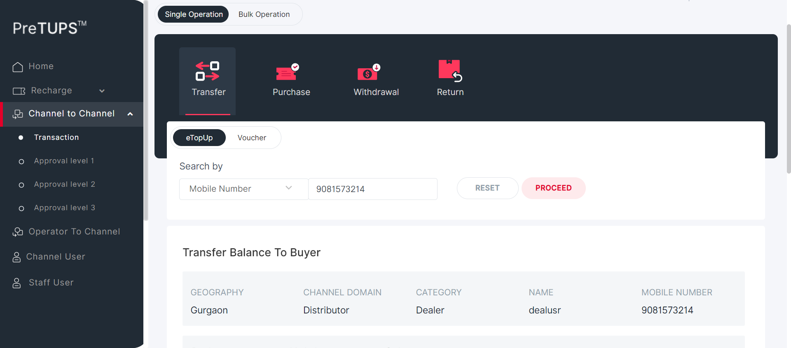
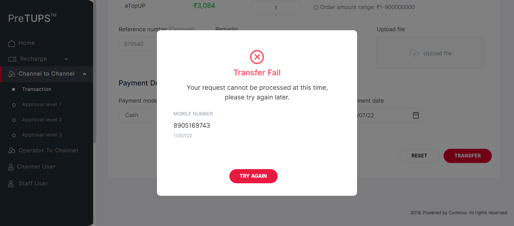
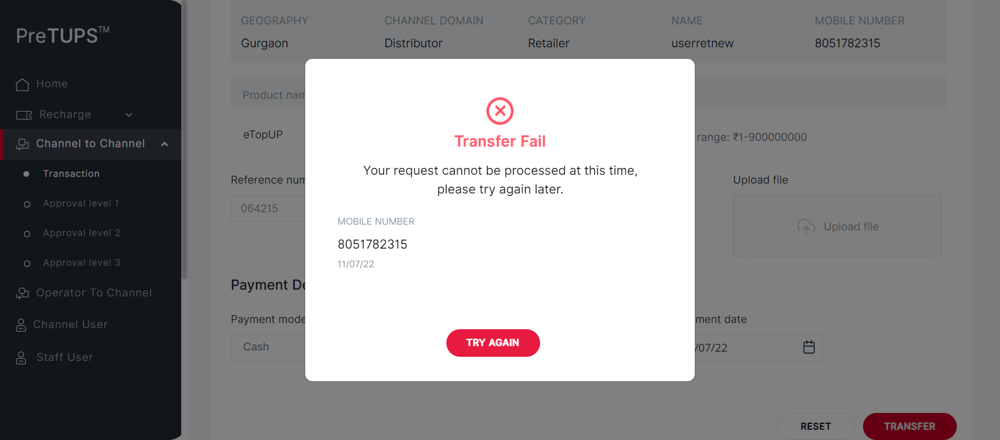
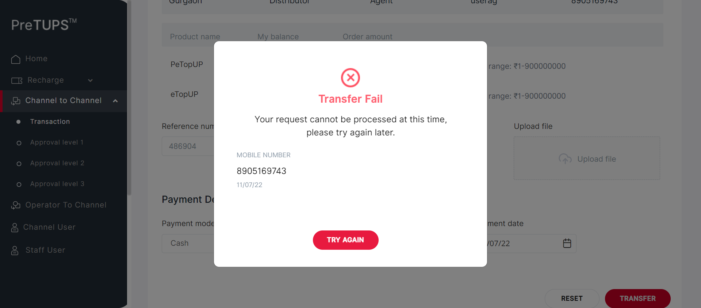

| Status | Timestamp | Details |
|---|---|---|
| info_outline | 12:23:42 PM | Entered getPreference(SE, NG, MAX_APPROVAL_LEVEL_C2C_TRANSFER) |
| info_outline | 12:23:42 PM | Service Class Preference Not Found |
| info_outline | 12:23:42 PM | Trying to get Preference value from Control Preferences |
| info_outline | 12:23:42 PM | Query Repository Returns: DEFAULT_VALUE (3) |
| info_outline | 12:23:42 PM | Category Code for Super Distributor: DIST |
| info_outline | 12:23:42 PM | Entered webInterface(Super Distributor) |
| info_outline | 12:23:42 PM | webInterface() :: select query: Select WEB_INTERFACE_ALLOWED from categories where category_name= ? |
| info_outline | 12:23:42 PM | Database Returns: WEB_INTERFACE_ALLOWED (Y) |
| info_outline | 12:23:42 PM | Exited webInterface() |
| info_outline | 12:23:42 PM | Entered performC2CTransferMobileBuyerType(Super Distributor, Dealer, 9081573214, 2468) |
| info_outline | 12:23:43 PM | Login ID Found as: suser |
| info_outline | 12:23:43 PM | Password Found as: Com@2469 |
| info_outline | 12:23:43 PM | LOGINID : suser |
| info_outline | 12:23:43 PM | LoginID found as: suser |
| info_outline | 12:23:43 PM | Password found as: Com@2469 |
| info_outline | 12:23:43 PM | Username found as: suser |
| info_outline | 12:23:44 PM | Trying to select Language |
| info_outline | 12:23:54 PM | Trying to enter Login ID |
| info_outline | 12:23:54 PM | Login ID entered successfully as: suser |
| info_outline | 12:23:54 PM | Trying to enter Password |
| info_outline | 12:23:54 PM | Password entered successfully as: Com@2469 |
| info_outline | 12:23:54 PM | Trying to click Login Button |
| info_outline | 12:23:54 PM | Login button clicked successfully |
| info_outline | 12:23:54 PM | Error Message Found on Login Screen: |
| info_outline | 12:24:05 PM | Trying clicking on C2C Heading |
| info_outline | 12:24:05 PM | User clicked C2C Heading Link. |
| info_outline | 12:24:05 PM | Trying clicking on C2C Transaction Heading |
| info_outline | 12:24:05 PM | User clicked C2C Transaction Heading Link. |
| info_outline | 12:24:05 PM | C2C Heading and Transaction Heading is clicked |
| info_outline | 12:24:05 PM | Trying clicking on C2C Single Operation Heading |
| info_outline | 12:24:07 PM | User clicked C2C Single Operation Heading. |
| info_outline | 12:24:07 PM | Trying clicking on C2C Transfer Heading |
| info_outline | 12:24:07 PM | User clicked C2C Transfer Heading. |
| info_outline | 12:24:07 PM | Trying clicking on Etopup |
| info_outline | 12:24:08 PM | Clicked Etopup. |
| info_outline | 12:24:08 PM | Trying to select C2C Buyer Type |
| info_outline | 12:24:08 PM | C2C Buyer Type selected : |
| info_outline | 12:24:08 PM | Entering C2C MSISDN |
| info_outline | 12:24:08 PM | Entered C2C MSISDN : 9081573214 |
| info_outline | 12:24:18 PM | Trying clicking on PROCEED button on C2C |
| info_outline | 12:24:20 PM | Clicked PROCEED button on C2C. |
| info_outline | 12:24:20 PM | Trying to initiate C2C Topups |
| info_outline | 12:24:20 PM | rowCount of c2c topups available on screen : 2 |
| info_outline | 12:24:20 PM | sheetProductCode : eTopUP |
| info_outline | 12:24:20 PM | sheetProductCode : PeTopUP |
| info_outline | 12:24:21 PM | quantity : 2 |
| info_outline | 12:24:21 PM | String.valueOf(quantity) SEND KEYS : 2 |
| info_outline | 12:24:21 PM | rowCount of c2c topups available on screen : 2 |
| info_outline | 12:24:21 PM | sheetProductCode : eTopUP |
| info_outline | 12:24:21 PM | quantity : 1 |
| info_outline | 12:24:21 PM | String.valueOf(quantity) SEND KEYS : 1 |
| info_outline | 12:24:21 PM | sheetProductCode : PeTopUP |
| info_outline | 12:24:21 PM | Entered Quantities: |
| info_outline | 12:24:21 PM | Entered Reference Number |
| info_outline | 12:24:21 PM | User entered Remarks |
| info_outline | 12:24:21 PM | Trying to select Payment mode : Cash |
| info_outline | 12:24:25 PM | Selected Payment Mode : Cash |
| info_outline | 12:24:25 PM | Trying to select Payment Instrument Number |
| info_outline | 12:24:25 PM | User entered PaymentInstNum: 124231 |
| info_outline | 12:24:25 PM | Trying to select Date |
| info_outline | 12:24:25 PM | Trying to enter Payment Instrument Date |
| info_outline | 12:24:25 PM | User entered PaymentInstDate: 11/07/22 |
| info_outline | 12:24:25 PM | Trying clicking on C2C TRANSFER button |
| info_outline | 12:24:25 PM | Clicked C2C Transfer Button |
| info_outline | 12:24:27 PM | PIN PopUP is visible. |
| info_outline | 12:24:27 PM | Trying to Enter Channel User PIN for C2C |
| info_outline | 12:24:27 PM | User entered PIN: 2468 |
| info_outline | 12:24:27 PM | Trying clicking on C2C TRANSFER button |
| info_outline | 12:24:27 PM | Clicked C2C Transfer Button |
| info_outline | 12:24:47 PM | PIN Popup is not visible. |
| info_outline | 12:24:47 PM | Getting Error Message For C2C Failure |
| info_outline | 12:24:47 PM | C2C Transfer Initiated Failed |
| error | 12:25:08 PM | Error while getting SSH Server Instance : com.jcraft.jsch.JSchException: java.net.ConnectException: Connection timed out: connect |
| cancel | 12:25:08 PM | Catalina Log |
| info_outline | 12:25:09 PM |  |
| info_outline | 12:25:09 PM | Exited performC2CTransferMobileBuyerType() |
| info_outline | 12:25:09 PM | Entered performC2CTransferMobileBuyerType(Super Distributor, Dealer, 9081573214, 2468) |
| info_outline | 12:25:09 PM | Login ID Found as: suser |
| info_outline | 12:25:09 PM | Password Found as: Com@2469 |
| info_outline | 12:25:09 PM | LOGINID : suser |
| info_outline | 12:25:09 PM | LoginID found as: suser |
| info_outline | 12:25:09 PM | Password found as: Com@2469 |
| info_outline | 12:25:09 PM | Username found as: suser |
| info_outline | 12:25:09 PM | Trying to select Language |
| info_outline | 12:25:19 PM | Trying to enter Login ID |
| info_outline | 12:25:19 PM | Login ID entered successfully as: suser |
| info_outline | 12:25:19 PM | Trying to enter Password |
| info_outline | 12:25:20 PM | Password entered successfully as: Com@2469 |
| info_outline | 12:25:20 PM | Trying to click Login Button |
| info_outline | 12:25:20 PM | Login button clicked successfully |
| info_outline | 12:25:20 PM | Error Message Found on Login Screen: |
| info_outline | 12:25:30 PM | Trying clicking on C2C Heading |
| info_outline | 12:25:30 PM | User clicked C2C Heading Link. |
| info_outline | 12:25:30 PM | Trying clicking on C2C Approval Level 1 Heading |
| info_outline | 12:25:30 PM | User clicked C2C Approval Level 1 Heading Link. |
| info_outline | 12:25:30 PM | C2C Heading and Transaction Heading is clicked |
| info_outline | 12:25:30 PM | Waiting for spinner |
| info_outline | 12:25:30 PM | Waiting for spinner to stop |
| info_outline | 12:25:30 PM | Spinner stopped |
| info_outline | 12:25:30 PM | Trying clicking on C2C Single Operation Heading |
| cancel | 12:25:50 PM | org.openqa.selenium.TimeoutException: Expected condition failed: waiting for visibility of element located by By.xpath: //button[@id='toggle-1-button'] (tried for 20 second(s) with 500 milliseconds interval) at org.openqa.selenium.support.ui.WebDriverWait.timeoutException(WebDriverWait.java:82) at org.openqa.selenium.support.ui.FluentWait.until(FluentWait.java:272) at angular.pageobjects.c2capproval.C2CApproval.clickC2CSingleOperationHeading(C2CApproval.java:85) at angular.feature.C2CTransferRevamp.performingLevel1Approval(C2CTransferRevamp.java:910) at angular.testscripts.prereuisitesangular.PreRequisite_C2CTransfer_Revamp.A_01_Test_C2CTransferMobileBuyerType(PreRequisite_C2CTransfer_Revamp.java:66) at sun.reflect.NativeMethodAccessorImpl.invoke0(Native Method) at sun.reflect.NativeMethodAccessorImpl.invoke(Unknown Source) at sun.reflect.DelegatingMethodAccessorImpl.invoke(Unknown Source) at java.lang.reflect.Method.invoke(Unknown Source) at org.testng.internal.MethodInvocationHelper.invokeMethod(MethodInvocationHelper.java:124) at org.testng.internal.Invoker.invokeMethod(Invoker.java:580) at org.testng.internal.Invoker.invokeTestMethod(Invoker.java:716) at org.testng.internal.Invoker.invokeTestMethods(Invoker.java:988) at org.testng.internal.TestMethodWorker.invokeTestMethods(TestMethodWorker.java:125) at org.testng.internal.TestMethodWorker.run(TestMethodWorker.java:109) at org.testng.TestRunner.privateRun(TestRunner.java:648) at org.testng.TestRunner.run(TestRunner.java:505) at org.testng.SuiteRunner.runTest(SuiteRunner.java:455) at org.testng.SuiteRunner.runSequentially(SuiteRunner.java:450) at org.testng.SuiteRunner.privateRun(SuiteRunner.java:415) at org.testng.SuiteRunner.run(SuiteRunner.java:364) at org.testng.SuiteRunnerWorker.runSuite(SuiteRunnerWorker.java:52) at org.testng.SuiteRunnerWorker.run(SuiteRunnerWorker.java:84) at org.testng.TestNG.runSuitesSequentially(TestNG.java:1208) at org.testng.TestNG.runSuitesLocally(TestNG.java:1137) at org.testng.TestNG.runSuites(TestNG.java:1049) at org.testng.TestNG.run(TestNG.java:1017) at org.testng.remote.AbstractRemoteTestNG.run(AbstractRemoteTestNG.java:115) at org.testng.remote.RemoteTestNG.initAndRun(RemoteTestNG.java:251) at org.testng.remote.RemoteTestNG.main(RemoteTestNG.java:77) Caused by: org.openqa.selenium.NoSuchElementException: Cannot locate an element using By.xpath: //button[@id='toggle-1-button'] For documentation on this error, please visit: http://seleniumhq.org/exceptions/no_such_element.html Build info: version: '3.10.0', revision: '176b4a9', time: '2018-03-02T19:03:16.397Z' System info: host: 'MCKL-20005142', ip: '192.168.1.40', os.name: 'Windows 10', os.arch: 'amd64', os.version: '10.0', java.version: '1.8.0_291' Driver info: driver.version: unknown at org.openqa.selenium.support.ui.ExpectedConditions.lambda$findElement$0(ExpectedConditions.java:896) at java.util.Optional.orElseThrow(Unknown Source) at org.openqa.selenium.support.ui.ExpectedConditions.findElement(ExpectedConditions.java:895) at org.openqa.selenium.support.ui.ExpectedConditions.access$000(ExpectedConditions.java:44) at org.openqa.selenium.support.ui.ExpectedConditions$7.apply(ExpectedConditions.java:206) at org.openqa.selenium.support.ui.ExpectedConditions$7.apply(ExpectedConditions.java:202) at org.openqa.selenium.support.ui.FluentWait.until(FluentWait.java:249) ... 28 more |
| error | 12:26:12 PM | Error while getting SSH Server Instance : com.jcraft.jsch.JSchException: java.net.ConnectException: Connection timed out: connect |
| cancel | 12:26:12 PM | Catalina Log |
| Status | Timestamp | Details |
|---|---|---|
| info_outline | 12:26:13 PM | Entered getPreference(AG, NG, MAX_APPROVAL_LEVEL_C2C_TRANSFER) |
| info_outline | 12:26:13 PM | Service Class Preference Not Found |
| info_outline | 12:26:13 PM | Trying to get Preference value from Control Preferences |
| info_outline | 12:26:13 PM | Query Repository Returns: DEFAULT_VALUE (0) |
| info_outline | 12:26:13 PM | Category Code for Super Distributor: DIST |
| info_outline | 12:26:13 PM | Entered webInterface(Super Distributor) |
| info_outline | 12:26:13 PM | webInterface() :: select query: Select WEB_INTERFACE_ALLOWED from categories where category_name= ? |
| info_outline | 12:26:13 PM | Database Returns: WEB_INTERFACE_ALLOWED (Y) |
| info_outline | 12:26:13 PM | Exited webInterface() |
| info_outline | 12:26:13 PM | Entered performC2CTransferMobileBuyerType(Super Distributor, Agent, 7802617823, 2468) |
| info_outline | 12:26:13 PM | Login ID Found as: suser |
| info_outline | 12:26:13 PM | Password Found as: Com@2469 |
| info_outline | 12:26:13 PM | LOGINID : suser |
| info_outline | 12:26:13 PM | LoginID found as: suser |
| info_outline | 12:26:13 PM | Password found as: Com@2469 |
| info_outline | 12:26:13 PM | Username found as: suser |
| info_outline | 12:26:13 PM | Trying to select Language |
| info_outline | 12:26:24 PM | Trying to enter Login ID |
| info_outline | 12:26:24 PM | Login ID entered successfully as: suser |
| info_outline | 12:26:24 PM | Trying to enter Password |
| info_outline | 12:26:24 PM | Password entered successfully as: Com@2469 |
| info_outline | 12:26:24 PM | Trying to click Login Button |
| info_outline | 12:26:24 PM | Login button clicked successfully |
| info_outline | 12:26:24 PM | Error Message Found on Login Screen: |
| info_outline | 12:26:35 PM | Trying clicking on C2C Heading |
| info_outline | 12:26:35 PM | User clicked C2C Heading Link. |
| info_outline | 12:26:35 PM | Trying clicking on C2C Transaction Heading |
| info_outline | 12:26:35 PM | User clicked C2C Transaction Heading Link. |
| info_outline | 12:26:35 PM | C2C Heading and Transaction Heading is clicked |
| info_outline | 12:26:35 PM | Trying clicking on C2C Single Operation Heading |
| info_outline | 12:26:35 PM | User clicked C2C Single Operation Heading. |
| info_outline | 12:26:35 PM | Trying clicking on C2C Transfer Heading |
| info_outline | 12:26:35 PM | User clicked C2C Transfer Heading. |
| info_outline | 12:26:35 PM | Trying clicking on Etopup |
| info_outline | 12:26:35 PM | Clicked Etopup. |
| info_outline | 12:26:35 PM | Trying to select C2C Buyer Type |
| info_outline | 12:26:35 PM | C2C Buyer Type selected : |
| info_outline | 12:26:35 PM | Entering C2C MSISDN |
| info_outline | 12:26:35 PM | Entered C2C MSISDN : 7802617823 |
| info_outline | 12:26:45 PM | Trying clicking on PROCEED button on C2C |
| info_outline | 12:26:48 PM | Clicked PROCEED button on C2C. |
| info_outline | 12:26:48 PM | Trying to initiate C2C Topups |
| info_outline | 12:26:48 PM | rowCount of c2c topups available on screen : 2 |
| info_outline | 12:26:48 PM | sheetProductCode : eTopUP |
| info_outline | 12:26:48 PM | sheetProductCode : PeTopUP |
| info_outline | 12:26:48 PM | quantity : 2 |
| info_outline | 12:26:48 PM | String.valueOf(quantity) SEND KEYS : 2 |
| info_outline | 12:26:48 PM | rowCount of c2c topups available on screen : 2 |
| info_outline | 12:26:48 PM | sheetProductCode : eTopUP |
| info_outline | 12:26:48 PM | quantity : 1 |
| info_outline | 12:26:48 PM | String.valueOf(quantity) SEND KEYS : 1 |
| info_outline | 12:26:48 PM | sheetProductCode : PeTopUP |
| info_outline | 12:26:48 PM | Entered Quantities: |
| info_outline | 12:26:48 PM | Entered Reference Number |
| info_outline | 12:26:48 PM | User entered Remarks |
| info_outline | 12:26:48 PM | Trying to select Payment mode : Cash |
| info_outline | 12:26:51 PM | Selected Payment Mode : Cash |
| info_outline | 12:26:51 PM | Trying to select Payment Instrument Number |
| info_outline | 12:26:52 PM | User entered PaymentInstNum: 124231 |
| info_outline | 12:26:52 PM | Trying to select Date |
| info_outline | 12:26:52 PM | Trying to enter Payment Instrument Date |
| info_outline | 12:26:52 PM | User entered PaymentInstDate: 11/07/22 |
| info_outline | 12:26:52 PM | Trying clicking on C2C TRANSFER button |
| info_outline | 12:26:52 PM | Clicked C2C Transfer Button |
| info_outline | 12:26:53 PM | PIN PopUP is visible. |
| info_outline | 12:26:53 PM | Trying to Enter Channel User PIN for C2C |
| info_outline | 12:26:53 PM | User entered PIN: 2468 |
| info_outline | 12:26:53 PM | Trying clicking on C2C TRANSFER button |
| info_outline | 12:26:53 PM | Clicked C2C Transfer Button |
| info_outline | 12:27:13 PM | PIN Popup is not visible. |
| info_outline | 12:27:13 PM | Getting Error Message For C2C Failure |
| info_outline | 12:27:13 PM | C2C Transfer Initiated Failed |
| error | 12:27:35 PM | Error while getting SSH Server Instance : com.jcraft.jsch.JSchException: java.net.ConnectException: Connection timed out: connect |
| cancel | 12:27:35 PM | Catalina Log |
| info_outline | 12:27:35 PM | |
| info_outline | 12:27:35 PM | Exited performC2CTransferMobileBuyerType() |
| info_outline | 12:27:35 PM | C2C vocuher transfer Approval is perform at c2c transfer itself |
| Status | Timestamp | Details |
|---|---|---|
| info_outline | 12:27:35 PM | Entered getPreference(AG, NG, MAX_APPROVAL_LEVEL_C2C_TRANSFER) |
| info_outline | 12:27:35 PM | Service Class Preference Not Found |
| info_outline | 12:27:35 PM | Trying to get Preference value from Control Preferences |
| info_outline | 12:27:35 PM | Query Repository Returns: DEFAULT_VALUE (0) |
| info_outline | 12:27:35 PM | Category Code for Super Distributor: DIST |
| info_outline | 12:27:35 PM | Entered webInterface(Super Distributor) |
| info_outline | 12:27:35 PM | webInterface() :: select query: Select WEB_INTERFACE_ALLOWED from categories where category_name= ? |
| info_outline | 12:27:35 PM | Database Returns: WEB_INTERFACE_ALLOWED (Y) |
| info_outline | 12:27:35 PM | Exited webInterface() |
| info_outline | 12:27:35 PM | Entered performC2CTransferMobileBuyerType(Super Distributor, Agent, 8905169743, 2468) |
| info_outline | 12:27:35 PM | Login ID Found as: suser |
| info_outline | 12:27:35 PM | Password Found as: Com@2469 |
| info_outline | 12:27:35 PM | LOGINID : suser |
| info_outline | 12:27:35 PM | LoginID found as: suser |
| info_outline | 12:27:35 PM | Password found as: Com@2469 |
| info_outline | 12:27:35 PM | Username found as: suser |
| info_outline | 12:27:35 PM | Trying to select Language |
| info_outline | 12:27:46 PM | Trying to enter Login ID |
| info_outline | 12:27:46 PM | Login ID entered successfully as: suser |
| info_outline | 12:27:46 PM | Trying to enter Password |
| info_outline | 12:27:46 PM | Password entered successfully as: Com@2469 |
| info_outline | 12:27:46 PM | Trying to click Login Button |
| info_outline | 12:27:46 PM | Login button clicked successfully |
| info_outline | 12:27:46 PM | Error Message Found on Login Screen: |
| info_outline | 12:27:55 PM | Trying clicking on C2C Heading |
| info_outline | 12:27:55 PM | User clicked C2C Heading Link. |
| info_outline | 12:27:55 PM | Trying clicking on C2C Transaction Heading |
| info_outline | 12:27:56 PM | User clicked C2C Transaction Heading Link. |
| info_outline | 12:27:56 PM | C2C Heading and Transaction Heading is clicked |
| info_outline | 12:27:56 PM | Trying clicking on C2C Single Operation Heading |
| info_outline | 12:27:56 PM | User clicked C2C Single Operation Heading. |
| info_outline | 12:27:56 PM | Trying clicking on C2C Transfer Heading |
| info_outline | 12:27:56 PM | User clicked C2C Transfer Heading. |
| info_outline | 12:27:56 PM | Trying clicking on Etopup |
| info_outline | 12:27:56 PM | Clicked Etopup. |
| info_outline | 12:27:56 PM | Trying to select C2C Buyer Type |
| info_outline | 12:27:56 PM | C2C Buyer Type selected : |
| info_outline | 12:27:56 PM | Entering C2C MSISDN |
| info_outline | 12:27:56 PM | Entered C2C MSISDN : 8905169743 |
| info_outline | 12:28:06 PM | Trying clicking on PROCEED button on C2C |
| info_outline | 12:28:08 PM | Clicked PROCEED button on C2C. |
| info_outline | 12:28:08 PM | Trying to initiate C2C Topups |
| info_outline | 12:28:08 PM | rowCount of c2c topups available on screen : 2 |
| info_outline | 12:28:08 PM | sheetProductCode : eTopUP |
| info_outline | 12:28:08 PM | sheetProductCode : PeTopUP |
| info_outline | 12:28:08 PM | quantity : 2 |
| info_outline | 12:28:09 PM | String.valueOf(quantity) SEND KEYS : 2 |
| info_outline | 12:28:09 PM | rowCount of c2c topups available on screen : 2 |
| info_outline | 12:28:09 PM | sheetProductCode : eTopUP |
| info_outline | 12:28:09 PM | quantity : 1 |
| info_outline | 12:28:09 PM | String.valueOf(quantity) SEND KEYS : 1 |
| info_outline | 12:28:09 PM | sheetProductCode : PeTopUP |
| info_outline | 12:28:09 PM | Entered Quantities: |
| info_outline | 12:28:09 PM | Entered Reference Number |
| info_outline | 12:28:09 PM | User entered Remarks |
| info_outline | 12:28:09 PM | Trying to select Payment mode : Cash |
| info_outline | 12:28:12 PM | Selected Payment Mode : Cash |
| info_outline | 12:28:12 PM | Trying to select Payment Instrument Number |
| info_outline | 12:28:12 PM | User entered PaymentInstNum: 124231 |
| info_outline | 12:28:12 PM | Trying to select Date |
| info_outline | 12:28:12 PM | Trying to enter Payment Instrument Date |
| info_outline | 12:28:12 PM | User entered PaymentInstDate: 11/07/22 |
| info_outline | 12:28:12 PM | Trying clicking on C2C TRANSFER button |
| info_outline | 12:28:13 PM | Clicked C2C Transfer Button |
| info_outline | 12:28:14 PM | PIN PopUP is visible. |
| info_outline | 12:28:14 PM | Trying to Enter Channel User PIN for C2C |
| info_outline | 12:28:14 PM | User entered PIN: 2468 |
| info_outline | 12:28:14 PM | Trying clicking on C2C TRANSFER button |
| info_outline | 12:28:14 PM | Clicked C2C Transfer Button |
| info_outline | 12:28:34 PM | PIN Popup is not visible. |
| info_outline | 12:28:34 PM | Getting Error Message For C2C Failure |
| info_outline | 12:28:34 PM | C2C Transfer Initiated Failed |
| error | 12:28:55 PM | Error while getting SSH Server Instance : com.jcraft.jsch.JSchException: java.net.ConnectException: Connection timed out: connect |
| cancel | 12:28:55 PM | Catalina Log |
| info_outline | 12:28:55 PM |  |
| info_outline | 12:28:55 PM | Exited performC2CTransferMobileBuyerType() |
| info_outline | 12:28:55 PM | C2C vocuher transfer Approval is perform at c2c transfer itself |
| Status | Timestamp | Details |
|---|---|---|
| info_outline | 12:28:55 PM | Entered getPreference(RET, NG, MAX_APPROVAL_LEVEL_C2C_TRANSFER) |
| info_outline | 12:28:55 PM | Service Class Preference Not Found |
| info_outline | 12:28:55 PM | Trying to get Preference value from Control Preferences |
| info_outline | 12:28:55 PM | Query Repository Returns: DEFAULT_VALUE (3) |
| info_outline | 12:28:56 PM | Category Code for Super Distributor: DIST |
| info_outline | 12:28:56 PM | Entered webInterface(Super Distributor) |
| info_outline | 12:28:56 PM | webInterface() :: select query: Select WEB_INTERFACE_ALLOWED from categories where category_name= ? |
| info_outline | 12:28:56 PM | Database Returns: WEB_INTERFACE_ALLOWED (Y) |
| info_outline | 12:28:56 PM | Exited webInterface() |
| info_outline | 12:28:56 PM | Entered performC2CTransferMobileBuyerType(Super Distributor, Retailer, 8051782315, 2468) |
| info_outline | 12:28:56 PM | Login ID Found as: suser |
| info_outline | 12:28:56 PM | Password Found as: Com@2469 |
| info_outline | 12:28:56 PM | LOGINID : suser |
| info_outline | 12:28:56 PM | LoginID found as: suser |
| info_outline | 12:28:56 PM | Password found as: Com@2469 |
| info_outline | 12:28:56 PM | Username found as: suser |
| info_outline | 12:28:56 PM | Trying to select Language |
| info_outline | 12:29:06 PM | Trying to enter Login ID |
| info_outline | 12:29:07 PM | Login ID entered successfully as: suser |
| info_outline | 12:29:07 PM | Trying to enter Password |
| info_outline | 12:29:07 PM | Password entered successfully as: Com@2469 |
| info_outline | 12:29:07 PM | Trying to click Login Button |
| info_outline | 12:29:07 PM | Login button clicked successfully |
| info_outline | 12:29:07 PM | Error Message Found on Login Screen: |
| info_outline | 12:29:15 PM | Trying clicking on C2C Heading |
| info_outline | 12:29:15 PM | User clicked C2C Heading Link. |
| info_outline | 12:29:15 PM | Trying clicking on C2C Transaction Heading |
| info_outline | 12:29:16 PM | User clicked C2C Transaction Heading Link. |
| info_outline | 12:29:16 PM | C2C Heading and Transaction Heading is clicked |
| info_outline | 12:29:16 PM | Trying clicking on C2C Single Operation Heading |
| info_outline | 12:29:16 PM | User clicked C2C Single Operation Heading. |
| info_outline | 12:29:16 PM | Trying clicking on C2C Transfer Heading |
| info_outline | 12:29:16 PM | User clicked C2C Transfer Heading. |
| info_outline | 12:29:16 PM | Trying clicking on Etopup |
| info_outline | 12:29:16 PM | Clicked Etopup. |
| info_outline | 12:29:16 PM | Trying to select C2C Buyer Type |
| info_outline | 12:29:16 PM | C2C Buyer Type selected : |
| info_outline | 12:29:16 PM | Entering C2C MSISDN |
| info_outline | 12:29:16 PM | Entered C2C MSISDN : 8051782315 |
| info_outline | 12:29:26 PM | Trying clicking on PROCEED button on C2C |
| info_outline | 12:29:28 PM | Clicked PROCEED button on C2C. |
| info_outline | 12:29:28 PM | Trying to initiate C2C Topups |
| info_outline | 12:29:28 PM | rowCount of c2c topups available on screen : 2 |
| info_outline | 12:29:28 PM | sheetProductCode : eTopUP |
| info_outline | 12:29:28 PM | quantity : 1 |
| info_outline | 12:29:28 PM | String.valueOf(quantity) SEND KEYS : 1 |
| info_outline | 12:29:28 PM | sheetProductCode : PeTopUP |
| info_outline | 12:29:28 PM | Entered Quantities: |
| info_outline | 12:29:29 PM | Entered Reference Number |
| info_outline | 12:29:29 PM | User entered Remarks |
| info_outline | 12:29:29 PM | Trying to select Payment mode : Cash |
| info_outline | 12:29:32 PM | Selected Payment Mode : Cash |
| info_outline | 12:29:32 PM | Trying to select Payment Instrument Number |
| info_outline | 12:29:32 PM | User entered PaymentInstNum: 124231 |
| info_outline | 12:29:32 PM | Trying to select Date |
| info_outline | 12:29:32 PM | Trying to enter Payment Instrument Date |
| info_outline | 12:29:32 PM | User entered PaymentInstDate: 11/07/22 |
| info_outline | 12:29:32 PM | Trying clicking on C2C TRANSFER button |
| info_outline | 12:29:32 PM | Clicked C2C Transfer Button |
| info_outline | 12:29:33 PM | PIN PopUP is visible. |
| info_outline | 12:29:33 PM | Trying to Enter Channel User PIN for C2C |
| info_outline | 12:29:34 PM | User entered PIN: 2468 |
| info_outline | 12:29:34 PM | Trying clicking on C2C TRANSFER button |
| info_outline | 12:29:34 PM | Clicked C2C Transfer Button |
| info_outline | 12:29:54 PM | PIN Popup is not visible. |
| info_outline | 12:29:54 PM | Getting Error Message For C2C Failure |
| info_outline | 12:29:54 PM | C2C Transfer Initiated Failed |
| error | 12:30:15 PM | Error while getting SSH Server Instance : com.jcraft.jsch.JSchException: java.net.ConnectException: Connection timed out: connect |
| cancel | 12:30:15 PM | Catalina Log |
| info_outline | 12:30:15 PM | |
| info_outline | 12:30:15 PM | Exited performC2CTransferMobileBuyerType() |
| info_outline | 12:30:16 PM | Entered performC2CTransferMobileBuyerType(Super Distributor, Retailer, 8051782315, 2468) |
| info_outline | 12:30:16 PM | Login ID Found as: suser |
| info_outline | 12:30:16 PM | Password Found as: Com@2469 |
| info_outline | 12:30:16 PM | LOGINID : suser |
| info_outline | 12:30:16 PM | LoginID found as: suser |
| info_outline | 12:30:16 PM | Password found as: Com@2469 |
| info_outline | 12:30:16 PM | Username found as: suser |
| info_outline | 12:30:16 PM | Trying to select Language |
| info_outline | 12:30:26 PM | Trying to enter Login ID |
| info_outline | 12:30:26 PM | Login ID entered successfully as: suser |
| info_outline | 12:30:26 PM | Trying to enter Password |
| info_outline | 12:30:26 PM | Password entered successfully as: Com@2469 |
| info_outline | 12:30:26 PM | Trying to click Login Button |
| info_outline | 12:30:27 PM | Login button clicked successfully |
| info_outline | 12:30:27 PM | Error Message Found on Login Screen: |
| info_outline | 12:30:36 PM | Trying clicking on C2C Heading |
| info_outline | 12:30:36 PM | User clicked C2C Heading Link. |
| info_outline | 12:30:36 PM | Trying clicking on C2C Approval Level 1 Heading |
| info_outline | 12:30:36 PM | User clicked C2C Approval Level 1 Heading Link. |
| info_outline | 12:30:36 PM | C2C Heading and Transaction Heading is clicked |
| info_outline | 12:30:36 PM | Waiting for spinner |
| info_outline | 12:30:36 PM | Waiting for spinner to stop |
| info_outline | 12:30:39 PM | Spinner stopped |
| info_outline | 12:30:39 PM | Trying clicking on C2C Single Operation Heading |
| info_outline | 12:30:39 PM | User clicked C2C Single Operation Heading. |
| info_outline | 12:30:39 PM | Trying clicking on etopUp Heading |
| info_outline | 12:30:39 PM | User clicked eTopup Heading Link. |
| info_outline | 12:30:39 PM | Trying to enter the TransactionId |
| info_outline | 12:30:39 PM | Entered the TransactionId |
| info_outline | 12:30:39 PM | Trying to Click the approve button |
| cancel | 12:30:59 PM | org.openqa.selenium.TimeoutException: Expected condition failed: waiting for visibility of element located by By.xpath: (//a[@class='approveClass'])[2] (tried for 20 second(s) with 500 milliseconds interval) at org.openqa.selenium.support.ui.WebDriverWait.timeoutException(WebDriverWait.java:82) at org.openqa.selenium.support.ui.FluentWait.until(FluentWait.java:272) at angular.pageobjects.c2capproval.C2CApproval.approveMainScreen(C2CApproval.java:100) at angular.feature.C2CTransferRevamp.performingLevel1Approval(C2CTransferRevamp.java:914) at angular.testscripts.prereuisitesangular.PreRequisite_C2CTransfer_Revamp.A_01_Test_C2CTransferMobileBuyerType(PreRequisite_C2CTransfer_Revamp.java:66) at sun.reflect.NativeMethodAccessorImpl.invoke0(Native Method) at sun.reflect.NativeMethodAccessorImpl.invoke(Unknown Source) at sun.reflect.DelegatingMethodAccessorImpl.invoke(Unknown Source) at java.lang.reflect.Method.invoke(Unknown Source) at org.testng.internal.MethodInvocationHelper.invokeMethod(MethodInvocationHelper.java:124) at org.testng.internal.Invoker.invokeMethod(Invoker.java:580) at org.testng.internal.Invoker.invokeTestMethod(Invoker.java:716) at org.testng.internal.Invoker.invokeTestMethods(Invoker.java:988) at org.testng.internal.TestMethodWorker.invokeTestMethods(TestMethodWorker.java:125) at org.testng.internal.TestMethodWorker.run(TestMethodWorker.java:109) at org.testng.TestRunner.privateRun(TestRunner.java:648) at org.testng.TestRunner.run(TestRunner.java:505) at org.testng.SuiteRunner.runTest(SuiteRunner.java:455) at org.testng.SuiteRunner.runSequentially(SuiteRunner.java:450) at org.testng.SuiteRunner.privateRun(SuiteRunner.java:415) at org.testng.SuiteRunner.run(SuiteRunner.java:364) at org.testng.SuiteRunnerWorker.runSuite(SuiteRunnerWorker.java:52) at org.testng.SuiteRunnerWorker.run(SuiteRunnerWorker.java:84) at org.testng.TestNG.runSuitesSequentially(TestNG.java:1208) at org.testng.TestNG.runSuitesLocally(TestNG.java:1137) at org.testng.TestNG.runSuites(TestNG.java:1049) at org.testng.TestNG.run(TestNG.java:1017) at org.testng.remote.AbstractRemoteTestNG.run(AbstractRemoteTestNG.java:115) at org.testng.remote.RemoteTestNG.initAndRun(RemoteTestNG.java:251) at org.testng.remote.RemoteTestNG.main(RemoteTestNG.java:77) Caused by: org.openqa.selenium.NoSuchElementException: Cannot locate an element using By.xpath: (//a[@class='approveClass'])[2] For documentation on this error, please visit: http://seleniumhq.org/exceptions/no_such_element.html Build info: version: '3.10.0', revision: '176b4a9', time: '2018-03-02T19:03:16.397Z' System info: host: 'MCKL-20005142', ip: '192.168.1.40', os.name: 'Windows 10', os.arch: 'amd64', os.version: '10.0', java.version: '1.8.0_291' Driver info: driver.version: unknown at org.openqa.selenium.support.ui.ExpectedConditions.lambda$findElement$0(ExpectedConditions.java:896) at java.util.Optional.orElseThrow(Unknown Source) at org.openqa.selenium.support.ui.ExpectedConditions.findElement(ExpectedConditions.java:895) at org.openqa.selenium.support.ui.ExpectedConditions.access$000(ExpectedConditions.java:44) at org.openqa.selenium.support.ui.ExpectedConditions$7.apply(ExpectedConditions.java:206) at org.openqa.selenium.support.ui.ExpectedConditions$7.apply(ExpectedConditions.java:202) at org.openqa.selenium.support.ui.FluentWait.until(FluentWait.java:249) ... 28 more |
| error | 12:31:21 PM | Error while getting SSH Server Instance : com.jcraft.jsch.JSchException: java.net.ConnectException: Connection timed out: connect |
| cancel | 12:31:21 PM | Catalina Log |
| Status | Timestamp | Details |
|---|---|---|
| info_outline | 12:31:21 PM | Entered getPreference(AG, NG, MAX_APPROVAL_LEVEL_C2C_TRANSFER) |
| info_outline | 12:31:21 PM | Service Class Preference Not Found |
| info_outline | 12:31:21 PM | Trying to get Preference value from Control Preferences |
| info_outline | 12:31:21 PM | Query Repository Returns: DEFAULT_VALUE (0) |
| info_outline | 12:31:21 PM | Category Code for Dealer: SE |
| info_outline | 12:31:21 PM | Entered webInterface(Dealer) |
| info_outline | 12:31:21 PM | webInterface() :: select query: Select WEB_INTERFACE_ALLOWED from categories where category_name= ? |
| info_outline | 12:31:21 PM | Database Returns: WEB_INTERFACE_ALLOWED (Y) |
| info_outline | 12:31:21 PM | Exited webInterface() |
| info_outline | 12:31:21 PM | Entered performC2CTransferMobileBuyerType(Dealer, Agent, 7802617823, 2468) |
| info_outline | 12:31:21 PM | Login ID Found as: newdealusrr |
| info_outline | 12:31:21 PM | Password Found as: Com@2468 |
| info_outline | 12:31:21 PM | LOGINID : newdealusrr |
| info_outline | 12:31:21 PM | LoginID found as: newdealusrr |
| info_outline | 12:31:21 PM | Password found as: Com@2468 |
| info_outline | 12:31:21 PM | Username found as: dealuser |
| info_outline | 12:31:21 PM | Trying to select Language |
| info_outline | 12:31:32 PM | Trying to enter Login ID |
| info_outline | 12:31:32 PM | Login ID entered successfully as: newdealusrr |
| info_outline | 12:31:32 PM | Trying to enter Password |
| info_outline | 12:31:32 PM | Password entered successfully as: Com@2468 |
| info_outline | 12:31:32 PM | Trying to click Login Button |
| info_outline | 12:31:32 PM | Login button clicked successfully |
| info_outline | 12:31:32 PM | Error Message Found on Login Screen: |
| info_outline | 12:31:41 PM | Trying clicking on C2C Heading |
| info_outline | 12:31:41 PM | User clicked C2C Heading Link. |
| info_outline | 12:31:41 PM | Trying clicking on C2C Transaction Heading |
| info_outline | 12:31:41 PM | User clicked C2C Transaction Heading Link. |
| info_outline | 12:31:41 PM | C2C Heading and Transaction Heading is clicked |
| info_outline | 12:31:41 PM | Trying clicking on C2C Single Operation Heading |
| info_outline | 12:31:41 PM | User clicked C2C Single Operation Heading. |
| info_outline | 12:31:41 PM | Trying clicking on C2C Transfer Heading |
| info_outline | 12:31:41 PM | User clicked C2C Transfer Heading. |
| info_outline | 12:31:41 PM | Trying clicking on Etopup |
| info_outline | 12:31:41 PM | Clicked Etopup. |
| info_outline | 12:31:41 PM | Trying to select C2C Buyer Type |
| info_outline | 12:31:41 PM | C2C Buyer Type selected : |
| info_outline | 12:31:41 PM | Entering C2C MSISDN |
| info_outline | 12:31:41 PM | Entered C2C MSISDN : 7802617823 |
| info_outline | 12:31:51 PM | Trying clicking on PROCEED button on C2C |
| info_outline | 12:31:54 PM | Clicked PROCEED button on C2C. |
| info_outline | 12:31:54 PM | Trying to initiate C2C Topups |
| info_outline | 12:31:54 PM | rowCount of c2c topups available on screen : 2 |
| info_outline | 12:31:54 PM | sheetProductCode : eTopUP |
| info_outline | 12:31:54 PM | sheetProductCode : PeTopUP |
| info_outline | 12:31:54 PM | quantity : 2 |
| info_outline | 12:31:54 PM | String.valueOf(quantity) SEND KEYS : 2 |
| info_outline | 12:31:54 PM | rowCount of c2c topups available on screen : 2 |
| info_outline | 12:31:54 PM | sheetProductCode : eTopUP |
| info_outline | 12:31:54 PM | quantity : 3 |
| info_outline | 12:31:54 PM | String.valueOf(quantity) SEND KEYS : 3 |
| info_outline | 12:31:54 PM | sheetProductCode : PeTopUP |
| info_outline | 12:31:54 PM | Entered Quantities: |
| info_outline | 12:31:54 PM | Entered Reference Number |
| info_outline | 12:31:54 PM | User entered Remarks |
| info_outline | 12:31:54 PM | Trying to select Payment mode : Cash |
| info_outline | 12:31:57 PM | Selected Payment Mode : Cash |
| info_outline | 12:31:57 PM | Trying to select Payment Instrument Number |
| info_outline | 12:31:58 PM | User entered PaymentInstNum: 124231 |
| info_outline | 12:31:58 PM | Trying to select Date |
| info_outline | 12:31:58 PM | Trying to enter Payment Instrument Date |
| info_outline | 12:31:58 PM | User entered PaymentInstDate: 11/07/22 |
| info_outline | 12:31:58 PM | Trying clicking on C2C TRANSFER button |
| info_outline | 12:31:58 PM | Clicked C2C Transfer Button |
| info_outline | 12:31:59 PM | PIN PopUP is visible. |
| info_outline | 12:31:59 PM | Trying to Enter Channel User PIN for C2C |
| info_outline | 12:31:59 PM | User entered PIN: 2468 |
| info_outline | 12:31:59 PM | Trying clicking on C2C TRANSFER button |
| info_outline | 12:31:59 PM | Clicked C2C Transfer Button |
| info_outline | 12:32:19 PM | PIN Popup is not visible. |
| info_outline | 12:32:19 PM | Getting Error Message For C2C Failure |
| info_outline | 12:32:19 PM | C2C Transfer Initiated Failed |
| error | 12:32:40 PM | Error while getting SSH Server Instance : com.jcraft.jsch.JSchException: java.net.ConnectException: Connection timed out: connect |
| cancel | 12:32:40 PM | Catalina Log |
| info_outline | 12:32:40 PM | |
| info_outline | 12:32:40 PM | Exited performC2CTransferMobileBuyerType() |
| info_outline | 12:32:40 PM | C2C vocuher transfer Approval is perform at c2c transfer itself |
| Status | Timestamp | Details |
|---|---|---|
| info_outline | 12:32:41 PM | Entered getPreference(AG, NG, MAX_APPROVAL_LEVEL_C2C_TRANSFER) |
| info_outline | 12:32:41 PM | Service Class Preference Not Found |
| info_outline | 12:32:41 PM | Trying to get Preference value from Control Preferences |
| info_outline | 12:32:41 PM | Query Repository Returns: DEFAULT_VALUE (0) |
| info_outline | 12:32:41 PM | Category Code for Dealer: SE |
| info_outline | 12:32:41 PM | Entered webInterface(Dealer) |
| info_outline | 12:32:41 PM | webInterface() :: select query: Select WEB_INTERFACE_ALLOWED from categories where category_name= ? |
| info_outline | 12:32:41 PM | Database Returns: WEB_INTERFACE_ALLOWED (Y) |
| info_outline | 12:32:41 PM | Exited webInterface() |
| info_outline | 12:32:41 PM | Entered performC2CTransferMobileBuyerType(Dealer, Agent, 8905169743, 2468) |
| info_outline | 12:32:41 PM | Login ID Found as: newdealusrr |
| info_outline | 12:32:41 PM | Password Found as: Com@2468 |
| info_outline | 12:32:41 PM | LOGINID : newdealusrr |
| info_outline | 12:32:41 PM | LoginID found as: newdealusrr |
| info_outline | 12:32:41 PM | Password found as: Com@2468 |
| info_outline | 12:32:41 PM | Username found as: dealuser |
| info_outline | 12:32:41 PM | Trying to select Language |
| info_outline | 12:32:52 PM | Trying to enter Login ID |
| info_outline | 12:32:52 PM | Login ID entered successfully as: newdealusrr |
| info_outline | 12:32:52 PM | Trying to enter Password |
| info_outline | 12:32:52 PM | Password entered successfully as: Com@2468 |
| info_outline | 12:32:52 PM | Trying to click Login Button |
| info_outline | 12:32:52 PM | Login button clicked successfully |
| info_outline | 12:32:52 PM | Error Message Found on Login Screen: |
| info_outline | 12:33:00 PM | Trying clicking on C2C Heading |
| info_outline | 12:33:01 PM | User clicked C2C Heading Link. |
| info_outline | 12:33:01 PM | Trying clicking on C2C Transaction Heading |
| info_outline | 12:33:01 PM | User clicked C2C Transaction Heading Link. |
| info_outline | 12:33:01 PM | C2C Heading and Transaction Heading is clicked |
| info_outline | 12:33:01 PM | Trying clicking on C2C Single Operation Heading |
| info_outline | 12:33:01 PM | User clicked C2C Single Operation Heading. |
| info_outline | 12:33:01 PM | Trying clicking on C2C Transfer Heading |
| info_outline | 12:33:01 PM | User clicked C2C Transfer Heading. |
| info_outline | 12:33:01 PM | Trying clicking on Etopup |
| info_outline | 12:33:01 PM | Clicked Etopup. |
| info_outline | 12:33:01 PM | Trying to select C2C Buyer Type |
| info_outline | 12:33:01 PM | C2C Buyer Type selected : |
| info_outline | 12:33:01 PM | Entering C2C MSISDN |
| info_outline | 12:33:01 PM | Entered C2C MSISDN : 8905169743 |
| info_outline | 12:33:11 PM | Trying clicking on PROCEED button on C2C |
| info_outline | 12:33:13 PM | Clicked PROCEED button on C2C. |
| info_outline | 12:33:13 PM | Trying to initiate C2C Topups |
| info_outline | 12:33:14 PM | rowCount of c2c topups available on screen : 2 |
| info_outline | 12:33:14 PM | sheetProductCode : eTopUP |
| info_outline | 12:33:14 PM | sheetProductCode : PeTopUP |
| info_outline | 12:33:14 PM | quantity : 2 |
| info_outline | 12:33:14 PM | String.valueOf(quantity) SEND KEYS : 2 |
| info_outline | 12:33:14 PM | rowCount of c2c topups available on screen : 2 |
| info_outline | 12:33:14 PM | sheetProductCode : eTopUP |
| info_outline | 12:33:14 PM | quantity : 3 |
| info_outline | 12:33:14 PM | String.valueOf(quantity) SEND KEYS : 3 |
| info_outline | 12:33:14 PM | sheetProductCode : PeTopUP |
| info_outline | 12:33:14 PM | Entered Quantities: |
| info_outline | 12:33:14 PM | Entered Reference Number |
| info_outline | 12:33:14 PM | User entered Remarks |
| info_outline | 12:33:14 PM | Trying to select Payment mode : Cash |
| info_outline | 12:33:17 PM | Selected Payment Mode : Cash |
| info_outline | 12:33:17 PM | Trying to select Payment Instrument Number |
| info_outline | 12:33:17 PM | User entered PaymentInstNum: 124231 |
| info_outline | 12:33:17 PM | Trying to select Date |
| info_outline | 12:33:17 PM | Trying to enter Payment Instrument Date |
| info_outline | 12:33:18 PM | User entered PaymentInstDate: 11/07/22 |
| info_outline | 12:33:18 PM | Trying clicking on C2C TRANSFER button |
| info_outline | 12:33:18 PM | Clicked C2C Transfer Button |
| info_outline | 12:33:19 PM | PIN PopUP is visible. |
| info_outline | 12:33:19 PM | Trying to Enter Channel User PIN for C2C |
| info_outline | 12:33:19 PM | User entered PIN: 2468 |
| info_outline | 12:33:19 PM | Trying clicking on C2C TRANSFER button |
| info_outline | 12:33:19 PM | Clicked C2C Transfer Button |
| info_outline | 12:33:39 PM | PIN Popup is not visible. |
| info_outline | 12:33:39 PM | Getting Error Message For C2C Failure |
| info_outline | 12:33:39 PM | C2C Transfer Initiated Failed |
| error | 12:34:00 PM | Error while getting SSH Server Instance : com.jcraft.jsch.JSchException: java.net.ConnectException: Connection timed out: connect |
| cancel | 12:34:00 PM | Catalina Log |
| info_outline | 12:34:00 PM | |
| info_outline | 12:34:00 PM | Exited performC2CTransferMobileBuyerType() |
| info_outline | 12:34:00 PM | C2C vocuher transfer Approval is perform at c2c transfer itself |
| Status | Timestamp | Details |
|---|---|---|
| info_outline | 12:34:00 PM | Entered getPreference(RET, NG, MAX_APPROVAL_LEVEL_C2C_TRANSFER) |
| info_outline | 12:34:01 PM | Service Class Preference Not Found |
| info_outline | 12:34:01 PM | Trying to get Preference value from Control Preferences |
| info_outline | 12:34:01 PM | Query Repository Returns: DEFAULT_VALUE (3) |
| info_outline | 12:34:01 PM | Category Code for Dealer: SE |
| info_outline | 12:34:01 PM | Entered webInterface(Dealer) |
| info_outline | 12:34:01 PM | webInterface() :: select query: Select WEB_INTERFACE_ALLOWED from categories where category_name= ? |
| info_outline | 12:34:01 PM | Database Returns: WEB_INTERFACE_ALLOWED (Y) |
| info_outline | 12:34:01 PM | Exited webInterface() |
| info_outline | 12:34:01 PM | Entered performC2CTransferMobileBuyerType(Dealer, Retailer, 8051782315, 2468) |
| info_outline | 12:34:01 PM | Login ID Found as: newdealusrr |
| info_outline | 12:34:01 PM | Password Found as: Com@2468 |
| info_outline | 12:34:01 PM | LOGINID : newdealusrr |
| info_outline | 12:34:01 PM | LoginID found as: newdealusrr |
| info_outline | 12:34:01 PM | Password found as: Com@2468 |
| info_outline | 12:34:01 PM | Username found as: dealuser |
| info_outline | 12:34:01 PM | Trying to select Language |
| info_outline | 12:34:12 PM | Trying to enter Login ID |
| info_outline | 12:34:12 PM | Login ID entered successfully as: newdealusrr |
| info_outline | 12:34:12 PM | Trying to enter Password |
| info_outline | 12:34:12 PM | Password entered successfully as: Com@2468 |
| info_outline | 12:34:12 PM | Trying to click Login Button |
| info_outline | 12:34:12 PM | Login button clicked successfully |
| info_outline | 12:34:12 PM | Error Message Found on Login Screen: |
| info_outline | 12:34:20 PM | Trying clicking on C2C Heading |
| info_outline | 12:34:21 PM | User clicked C2C Heading Link. |
| info_outline | 12:34:21 PM | Trying clicking on C2C Transaction Heading |
| info_outline | 12:34:21 PM | User clicked C2C Transaction Heading Link. |
| info_outline | 12:34:21 PM | C2C Heading and Transaction Heading is clicked |
| info_outline | 12:34:21 PM | Trying clicking on C2C Single Operation Heading |
| info_outline | 12:34:21 PM | User clicked C2C Single Operation Heading. |
| info_outline | 12:34:21 PM | Trying clicking on C2C Transfer Heading |
| info_outline | 12:34:21 PM | User clicked C2C Transfer Heading. |
| info_outline | 12:34:21 PM | Trying clicking on Etopup |
| info_outline | 12:34:21 PM | Clicked Etopup. |
| info_outline | 12:34:21 PM | Trying to select C2C Buyer Type |
| info_outline | 12:34:21 PM | C2C Buyer Type selected : |
| info_outline | 12:34:21 PM | Entering C2C MSISDN |
| info_outline | 12:34:21 PM | Entered C2C MSISDN : 8051782315 |
| info_outline | 12:34:31 PM | Trying clicking on PROCEED button on C2C |
| info_outline | 12:34:34 PM | Clicked PROCEED button on C2C. |
| info_outline | 12:34:34 PM | Trying to initiate C2C Topups |
| info_outline | 12:34:34 PM | rowCount of c2c topups available on screen : 2 |
| info_outline | 12:34:34 PM | sheetProductCode : eTopUP |
| info_outline | 12:34:34 PM | quantity : 3 |
| info_outline | 12:34:34 PM | String.valueOf(quantity) SEND KEYS : 3 |
| info_outline | 12:34:34 PM | sheetProductCode : PeTopUP |
| info_outline | 12:34:34 PM | Entered Quantities: |
| info_outline | 12:34:34 PM | Entered Reference Number |
| info_outline | 12:34:34 PM | User entered Remarks |
| info_outline | 12:34:34 PM | Trying to select Payment mode : Cash |
| info_outline | 12:34:37 PM | Selected Payment Mode : Cash |
| info_outline | 12:34:37 PM | Trying to select Payment Instrument Number |
| info_outline | 12:34:37 PM | User entered PaymentInstNum: 124231 |
| info_outline | 12:34:37 PM | Trying to select Date |
| info_outline | 12:34:37 PM | Trying to enter Payment Instrument Date |
| info_outline | 12:34:38 PM | User entered PaymentInstDate: 11/07/22 |
| info_outline | 12:34:38 PM | Trying clicking on C2C TRANSFER button |
| info_outline | 12:34:38 PM | Clicked C2C Transfer Button |
| info_outline | 12:34:38 PM | PIN PopUP is visible. |
| info_outline | 12:34:38 PM | Trying to Enter Channel User PIN for C2C |
| info_outline | 12:34:38 PM | User entered PIN: 2468 |
| info_outline | 12:34:38 PM | Trying clicking on C2C TRANSFER button |
| info_outline | 12:34:39 PM | Clicked C2C Transfer Button |
| info_outline | 12:34:59 PM | PIN Popup is not visible. |
| info_outline | 12:34:59 PM | Getting Error Message For C2C Failure |
| info_outline | 12:34:59 PM | C2C Transfer Initiated Failed |
| error | 12:35:20 PM | Error while getting SSH Server Instance : com.jcraft.jsch.JSchException: java.net.ConnectException: Connection timed out: connect |
| cancel | 12:35:20 PM | Catalina Log |
| info_outline | 12:35:20 PM |  |
| info_outline | 12:35:20 PM | Exited performC2CTransferMobileBuyerType() |
| info_outline | 12:35:20 PM | Entered performC2CTransferMobileBuyerType(Dealer, Retailer, 8051782315, 2468) |
| info_outline | 12:35:20 PM | Login ID Found as: newdealusrr |
| info_outline | 12:35:20 PM | Password Found as: Com@2468 |
| info_outline | 12:35:20 PM | LOGINID : newdealusrr |
| info_outline | 12:35:20 PM | LoginID found as: newdealusrr |
| info_outline | 12:35:20 PM | Password found as: Com@2468 |
| info_outline | 12:35:20 PM | Username found as: dealuser |
| info_outline | 12:35:20 PM | Trying to select Language |
| info_outline | 12:35:31 PM | Trying to enter Login ID |
| info_outline | 12:35:31 PM | Login ID entered successfully as: newdealusrr |
| info_outline | 12:35:31 PM | Trying to enter Password |
| info_outline | 12:35:31 PM | Password entered successfully as: Com@2468 |
| info_outline | 12:35:31 PM | Trying to click Login Button |
| info_outline | 12:35:31 PM | Login button clicked successfully |
| info_outline | 12:35:31 PM | Error Message Found on Login Screen: |
| info_outline | 12:35:40 PM | Trying clicking on C2C Heading |
| info_outline | 12:35:40 PM | User clicked C2C Heading Link. |
| info_outline | 12:35:40 PM | Trying clicking on C2C Approval Level 1 Heading |
| info_outline | 12:35:40 PM | User clicked C2C Approval Level 1 Heading Link. |
| info_outline | 12:35:40 PM | C2C Heading and Transaction Heading is clicked |
| info_outline | 12:35:40 PM | Waiting for spinner |
| info_outline | 12:35:41 PM | Waiting for spinner to stop |
| info_outline | 12:35:43 PM | Spinner stopped |
| info_outline | 12:35:43 PM | Trying clicking on C2C Single Operation Heading |
| cancel | 12:35:44 PM | |
| error | 12:36:05 PM | Error while getting SSH Server Instance : com.jcraft.jsch.JSchException: java.net.ConnectException: Connection timed out: connect |
| cancel | 12:36:05 PM | Catalina Log |
| Status | Timestamp | Details |
|---|---|---|
| info_outline | 12:36:05 PM | Entered getPreference(RET, NG, MAX_APPROVAL_LEVEL_C2C_TRANSFER) |
| info_outline | 12:36:05 PM | Service Class Preference Not Found |
| info_outline | 12:36:05 PM | Trying to get Preference value from Control Preferences |
| info_outline | 12:36:05 PM | Query Repository Returns: DEFAULT_VALUE (3) |
| info_outline | 12:36:05 PM | Category Code for Agent: AG |
| info_outline | 12:36:06 PM | Entered webInterface(Agent) |
| info_outline | 12:36:06 PM | webInterface() :: select query: Select WEB_INTERFACE_ALLOWED from categories where category_name= ? |
| info_outline | 12:36:06 PM | Database Returns: WEB_INTERFACE_ALLOWED (Y) |
| info_outline | 12:36:06 PM | Exited webInterface() |
| info_outline | 12:36:06 PM | Entered performC2CTransferMobileBuyerType(Agent, Retailer, 8051782315, 2468) |
| info_outline | 12:36:06 PM | Login ID Found as: agusernew |
| info_outline | 12:36:06 PM | Password Found as: Com@2468 |
| info_outline | 12:36:06 PM | LOGINID : agusernew |
| info_outline | 12:36:06 PM | LoginID found as: agusernew |
| info_outline | 12:36:06 PM | Password found as: Com@2468 |
| info_outline | 12:36:06 PM | Username found as: agentuser |
| info_outline | 12:36:06 PM | Trying to select Language |
| info_outline | 12:36:16 PM | Trying to enter Login ID |
| info_outline | 12:36:16 PM | Login ID entered successfully as: agusernew |
| info_outline | 12:36:16 PM | Trying to enter Password |
| info_outline | 12:36:17 PM | Password entered successfully as: Com@2468 |
| info_outline | 12:36:17 PM | Trying to click Login Button |
| info_outline | 12:36:17 PM | Login button clicked successfully |
| info_outline | 12:36:17 PM | Error Message Found on Login Screen: |
| info_outline | 12:36:25 PM | Trying clicking on C2C Heading |
| info_outline | 12:36:25 PM | User clicked C2C Heading Link. |
| info_outline | 12:36:25 PM | Trying clicking on C2C Transaction Heading |
| info_outline | 12:36:25 PM | User clicked C2C Transaction Heading Link. |
| info_outline | 12:36:25 PM | C2C Heading and Transaction Heading is clicked |
| info_outline | 12:36:25 PM | Trying clicking on C2C Single Operation Heading |
| info_outline | 12:36:25 PM | User clicked C2C Single Operation Heading. |
| info_outline | 12:36:25 PM | Trying clicking on C2C Transfer Heading |
| info_outline | 12:36:25 PM | User clicked C2C Transfer Heading. |
| info_outline | 12:36:25 PM | Trying clicking on Etopup |
| info_outline | 12:36:25 PM | Clicked Etopup. |
| info_outline | 12:36:25 PM | Trying to select C2C Buyer Type |
| info_outline | 12:36:25 PM | C2C Buyer Type selected : |
| info_outline | 12:36:25 PM | Entering C2C MSISDN |
| info_outline | 12:36:26 PM | Entered C2C MSISDN : 8051782315 |
| info_outline | 12:36:36 PM | Trying clicking on PROCEED button on C2C |
| info_outline | 12:36:38 PM | Clicked PROCEED button on C2C. |
| info_outline | 12:36:38 PM | Trying to initiate C2C Topups |
| info_outline | 12:36:38 PM | rowCount of c2c topups available on screen : 2 |
| info_outline | 12:36:38 PM | sheetProductCode : eTopUP |
| info_outline | 12:36:38 PM | quantity : 3 |
| info_outline | 12:36:38 PM | String.valueOf(quantity) SEND KEYS : 3 |
| info_outline | 12:36:38 PM | sheetProductCode : PeTopUP |
| info_outline | 12:36:38 PM | Entered Quantities: |
| info_outline | 12:36:38 PM | Entered Reference Number |
| info_outline | 12:36:38 PM | User entered Remarks |
| info_outline | 12:36:38 PM | Trying to select Payment mode : Cash |
| info_outline | 12:36:41 PM | Selected Payment Mode : Cash |
| info_outline | 12:36:41 PM | Trying to select Payment Instrument Number |
| info_outline | 12:36:41 PM | User entered PaymentInstNum: 124231 |
| info_outline | 12:36:41 PM | Trying to select Date |
| info_outline | 12:36:41 PM | Trying to enter Payment Instrument Date |
| info_outline | 12:36:42 PM | User entered PaymentInstDate: 11/07/22 |
| info_outline | 12:36:42 PM | Trying clicking on C2C TRANSFER button |
| info_outline | 12:36:42 PM | Clicked C2C Transfer Button |
| info_outline | 12:36:43 PM | PIN PopUP is visible. |
| info_outline | 12:36:43 PM | Trying to Enter Channel User PIN for C2C |
| info_outline | 12:36:43 PM | User entered PIN: 2468 |
| info_outline | 12:36:43 PM | Trying clicking on C2C TRANSFER button |
| info_outline | 12:36:43 PM | Clicked C2C Transfer Button |
| info_outline | 12:37:03 PM | PIN Popup is not visible. |
| info_outline | 12:37:03 PM | Getting Error Message For C2C Failure |
| info_outline | 12:37:03 PM | C2C Transfer Initiated Failed |
| error | 12:37:24 PM | Error while getting SSH Server Instance : com.jcraft.jsch.JSchException: java.net.ConnectException: Connection timed out: connect |
| cancel | 12:37:24 PM | Catalina Log |
| info_outline | 12:37:24 PM | |
| info_outline | 12:37:24 PM | Exited performC2CTransferMobileBuyerType() |
| info_outline | 12:37:24 PM | Entered performC2CTransferMobileBuyerType(Agent, Retailer, 8051782315, 2468) |
| info_outline | 12:37:24 PM | Login ID Found as: agusernew |
| info_outline | 12:37:24 PM | Password Found as: Com@2468 |
| info_outline | 12:37:24 PM | LOGINID : agusernew |
| info_outline | 12:37:24 PM | LoginID found as: agusernew |
| info_outline | 12:37:24 PM | Password found as: Com@2468 |
| info_outline | 12:37:24 PM | Username found as: agentuser |
| info_outline | 12:37:25 PM | Trying to select Language |
| info_outline | 12:37:35 PM | Trying to enter Login ID |
| info_outline | 12:37:35 PM | Login ID entered successfully as: agusernew |
| info_outline | 12:37:35 PM | Trying to enter Password |
| info_outline | 12:37:35 PM | Password entered successfully as: Com@2468 |
| info_outline | 12:37:35 PM | Trying to click Login Button |
| info_outline | 12:37:35 PM | Login button clicked successfully |
| info_outline | 12:37:35 PM | Error Message Found on Login Screen: |
| info_outline | 12:37:44 PM | Trying clicking on C2C Heading |
| info_outline | 12:37:44 PM | User clicked C2C Heading Link. |
| info_outline | 12:37:44 PM | Trying clicking on C2C Approval Level 1 Heading |
| info_outline | 12:37:45 PM | User clicked C2C Approval Level 1 Heading Link. |
| info_outline | 12:37:45 PM | C2C Heading and Transaction Heading is clicked |
| info_outline | 12:37:45 PM | Waiting for spinner |
| info_outline | 12:37:45 PM | Waiting for spinner to stop |
| info_outline | 12:37:46 PM | Spinner stopped |
| info_outline | 12:37:46 PM | Trying clicking on C2C Single Operation Heading |
| info_outline | 12:37:46 PM | User clicked C2C Single Operation Heading. |
| info_outline | 12:37:46 PM | Trying clicking on etopUp Heading |
| info_outline | 12:37:47 PM | User clicked eTopup Heading Link. |
| info_outline | 12:37:47 PM | Trying to enter the TransactionId |
| info_outline | 12:37:47 PM | Entered the TransactionId |
| info_outline | 12:37:47 PM | Trying to Click the approve button |
| cancel | 12:38:07 PM | org.openqa.selenium.TimeoutException: Expected condition failed: waiting for visibility of element located by By.xpath: (//a[@class='approveClass'])[2] (tried for 20 second(s) with 500 milliseconds interval) at org.openqa.selenium.support.ui.WebDriverWait.timeoutException(WebDriverWait.java:82) at org.openqa.selenium.support.ui.FluentWait.until(FluentWait.java:272) at angular.pageobjects.c2capproval.C2CApproval.approveMainScreen(C2CApproval.java:100) at angular.feature.C2CTransferRevamp.performingLevel1Approval(C2CTransferRevamp.java:914) at angular.testscripts.prereuisitesangular.PreRequisite_C2CTransfer_Revamp.A_01_Test_C2CTransferMobileBuyerType(PreRequisite_C2CTransfer_Revamp.java:66) at sun.reflect.NativeMethodAccessorImpl.invoke0(Native Method) at sun.reflect.NativeMethodAccessorImpl.invoke(Unknown Source) at sun.reflect.DelegatingMethodAccessorImpl.invoke(Unknown Source) at java.lang.reflect.Method.invoke(Unknown Source) at org.testng.internal.MethodInvocationHelper.invokeMethod(MethodInvocationHelper.java:124) at org.testng.internal.Invoker.invokeMethod(Invoker.java:580) at org.testng.internal.Invoker.invokeTestMethod(Invoker.java:716) at org.testng.internal.Invoker.invokeTestMethods(Invoker.java:988) at org.testng.internal.TestMethodWorker.invokeTestMethods(TestMethodWorker.java:125) at org.testng.internal.TestMethodWorker.run(TestMethodWorker.java:109) at org.testng.TestRunner.privateRun(TestRunner.java:648) at org.testng.TestRunner.run(TestRunner.java:505) at org.testng.SuiteRunner.runTest(SuiteRunner.java:455) at org.testng.SuiteRunner.runSequentially(SuiteRunner.java:450) at org.testng.SuiteRunner.privateRun(SuiteRunner.java:415) at org.testng.SuiteRunner.run(SuiteRunner.java:364) at org.testng.SuiteRunnerWorker.runSuite(SuiteRunnerWorker.java:52) at org.testng.SuiteRunnerWorker.run(SuiteRunnerWorker.java:84) at org.testng.TestNG.runSuitesSequentially(TestNG.java:1208) at org.testng.TestNG.runSuitesLocally(TestNG.java:1137) at org.testng.TestNG.runSuites(TestNG.java:1049) at org.testng.TestNG.run(TestNG.java:1017) at org.testng.remote.AbstractRemoteTestNG.run(AbstractRemoteTestNG.java:115) at org.testng.remote.RemoteTestNG.initAndRun(RemoteTestNG.java:251) at org.testng.remote.RemoteTestNG.main(RemoteTestNG.java:77) Caused by: org.openqa.selenium.NoSuchElementException: Cannot locate an element using By.xpath: (//a[@class='approveClass'])[2] For documentation on this error, please visit: http://seleniumhq.org/exceptions/no_such_element.html Build info: version: '3.10.0', revision: '176b4a9', time: '2018-03-02T19:03:16.397Z' System info: host: 'MCKL-20005142', ip: '192.168.1.40', os.name: 'Windows 10', os.arch: 'amd64', os.version: '10.0', java.version: '1.8.0_291' Driver info: driver.version: unknown at org.openqa.selenium.support.ui.ExpectedConditions.lambda$findElement$0(ExpectedConditions.java:896) at java.util.Optional.orElseThrow(Unknown Source) at org.openqa.selenium.support.ui.ExpectedConditions.findElement(ExpectedConditions.java:895) at org.openqa.selenium.support.ui.ExpectedConditions.access$000(ExpectedConditions.java:44) at org.openqa.selenium.support.ui.ExpectedConditions$7.apply(ExpectedConditions.java:206) at org.openqa.selenium.support.ui.ExpectedConditions$7.apply(ExpectedConditions.java:202) at org.openqa.selenium.support.ui.FluentWait.until(FluentWait.java:249) ... 28 more |
| error | 12:38:28 PM | Error while getting SSH Server Instance : com.jcraft.jsch.JSchException: java.net.ConnectException: Connection timed out: connect |
| cancel | 12:38:28 PM | Catalina Log |
| low_priority | 12:38:28 PM | java.lang.NullPointerException |
| low_priority | 12:38:28 PM | java.lang.NullPointerException |
| low_priority | 12:38:28 PM | java.lang.NullPointerException |
| low_priority | 12:38:28 PM | java.lang.NullPointerException |
| low_priority | 12:38:28 PM | java.lang.NullPointerException |
| low_priority | 12:38:28 PM | java.lang.NullPointerException |
| info_outline | 12:38:29 PM | Entered getSystemPreference(TRF_RULE_USER_LEVEL_ALLOW) |
| info_outline | 12:38:29 PM | getSystemPreference() :: select query: select DEFAULT_VALUE from system_preferences where PREFERENCE_CODE = ? |
| info_outline | 12:38:29 PM | Database Returns: DEFAULT_VALUE (true) |
| info_outline | 12:38:29 PM | Exiting getSystemPreference() |
| Status | Timestamp | Details |
|---|---|---|
| info_outline | 12:38:29 PM | Entered getPreference(SE, NG, MAX_APPROVAL_LEVEL_C2C_TRANSFER) |
| info_outline | 12:38:29 PM | Service Class Preference Not Found |
| info_outline | 12:38:29 PM | Trying to get Preference value from Control Preferences |
| info_outline | 12:38:29 PM | Query Repository Returns: DEFAULT_VALUE (3) |
| info_outline | 12:38:29 PM | Category Code for Super Distributor: DIST |
| info_outline | 12:38:29 PM | Entered webInterface(Super Distributor) |
| info_outline | 12:38:29 PM | webInterface() :: select query: Select WEB_INTERFACE_ALLOWED from categories where category_name= ? |
| info_outline | 12:38:29 PM | Database Returns: WEB_INTERFACE_ALLOWED (Y) |
| info_outline | 12:38:29 PM | Exited webInterface() |
| info_outline | 12:38:29 PM | Entered performC2CTransfer(Super Distributor, Dealer, 9081573214, 2468) |
| info_outline | 12:38:29 PM | Login ID Found as: suser |
| info_outline | 12:38:29 PM | Password Found as: Com@2469 |
| info_outline | 12:38:29 PM | LOGINID : suser |
| info_outline | 12:38:29 PM | LoginID found as: suser |
| info_outline | 12:38:29 PM | Password found as: Com@2469 |
| info_outline | 12:38:29 PM | Username found as: suser |
| info_outline | 12:38:29 PM | Trying to select Language |
| info_outline | 12:38:40 PM | Trying to enter Login ID |
| info_outline | 12:38:40 PM | Login ID entered successfully as: suser |
| info_outline | 12:38:40 PM | Trying to enter Password |
| info_outline | 12:38:40 PM | Password entered successfully as: Com@2469 |
| info_outline | 12:38:40 PM | Trying to click Login Button |
| info_outline | 12:38:40 PM | Login button clicked successfully |
| info_outline | 12:38:40 PM | Error Message Found on Login Screen: |
| info_outline | 12:38:50 PM | Trying clicking on C2C Heading |
| info_outline | 12:38:50 PM | User clicked C2C Heading Link. |
| info_outline | 12:38:50 PM | Trying clicking on C2C Transaction Heading |
| info_outline | 12:38:50 PM | User clicked C2C Transaction Heading Link. |
| info_outline | 12:38:50 PM | C2C Heading and Transaction Heading is clicked |
| info_outline | 12:38:50 PM | Trying clicking on C2C Single Operation Heading |
| info_outline | 12:38:50 PM | User clicked C2C Single Operation Heading. |
| info_outline | 12:38:50 PM | Trying clicking on C2C Transfer Heading |
| info_outline | 12:38:51 PM | User clicked C2C Transfer Heading. |
| info_outline | 12:38:51 PM | Trying clicking on Etopup |
| info_outline | 12:38:51 PM | Clicked Etopup. |
| info_outline | 12:38:51 PM | Trying to select C2C Buyer Type |
| info_outline | 12:38:51 PM | C2C Buyer Type selected : |
| info_outline | 12:38:51 PM | Trying to select Category for C2C |
| info_outline | 12:38:51 PM | Selected category : Dealer |
| info_outline | 12:38:51 PM | Entered getLoginidFromMsisdn(9081573214) |
| info_outline | 12:38:51 PM | getLoginidFromMsisdn() :: select query: select LOGIN_ID from USERS where MSISDN = ? |
| info_outline | 12:38:51 PM | Database Returns: user_Name (9081573214) |
| info_outline | 12:38:51 PM | Exiting getLoginidFromMsisdn() |
| info_outline | 12:38:51 PM | Trying to enter Loginid for LOGINID Buyer Type |
| info_outline | 12:38:51 PM | Enter Loginid for LOGINID Buyer Type |
| info_outline | 12:38:52 PM | Trying clicking on PROCEED button on C2C |
| info_outline | 12:38:55 PM | Clicked PROCEED button on C2C. |
| info_outline | 12:38:55 PM | Trying to initiate C2C Topups |
| cancel | 12:39:15 PM | org.openqa.selenium.TimeoutException: Expected condition failed: waiting for visibility of element located by By.xpath: //form[@id='control']//label[@class='transfer-e-top-up-to-b'] (tried for 20 second(s) with 500 milliseconds interval) at org.openqa.selenium.support.ui.WebDriverWait.timeoutException(WebDriverWait.java:82) at org.openqa.selenium.support.ui.FluentWait.until(FluentWait.java:272) at angular.pageobjects.c2ctransfer.C2CTransfers.enterQuantityforC2CRevamp(C2CTransfers.java:999) at angular.feature.C2CTransferRevamp.performC2CTransferLoginBuyerType(C2CTransferRevamp.java:166) at angular.testscripts.prereuisitesangular.PreRequisite_C2CTransfer_Revamp.A_02_Test_C2CTransferLoginBuyerType(PreRequisite_C2CTransfer_Revamp.java:98) at sun.reflect.NativeMethodAccessorImpl.invoke0(Native Method) at sun.reflect.NativeMethodAccessorImpl.invoke(Unknown Source) at sun.reflect.DelegatingMethodAccessorImpl.invoke(Unknown Source) at java.lang.reflect.Method.invoke(Unknown Source) at org.testng.internal.MethodInvocationHelper.invokeMethod(MethodInvocationHelper.java:124) at org.testng.internal.Invoker.invokeMethod(Invoker.java:580) at org.testng.internal.Invoker.invokeTestMethod(Invoker.java:716) at org.testng.internal.Invoker.invokeTestMethods(Invoker.java:988) at org.testng.internal.TestMethodWorker.invokeTestMethods(TestMethodWorker.java:125) at org.testng.internal.TestMethodWorker.run(TestMethodWorker.java:109) at org.testng.TestRunner.privateRun(TestRunner.java:648) at org.testng.TestRunner.run(TestRunner.java:505) at org.testng.SuiteRunner.runTest(SuiteRunner.java:455) at org.testng.SuiteRunner.runSequentially(SuiteRunner.java:450) at org.testng.SuiteRunner.privateRun(SuiteRunner.java:415) at org.testng.SuiteRunner.run(SuiteRunner.java:364) at org.testng.SuiteRunnerWorker.runSuite(SuiteRunnerWorker.java:52) at org.testng.SuiteRunnerWorker.run(SuiteRunnerWorker.java:84) at org.testng.TestNG.runSuitesSequentially(TestNG.java:1208) at org.testng.TestNG.runSuitesLocally(TestNG.java:1137) at org.testng.TestNG.runSuites(TestNG.java:1049) at org.testng.TestNG.run(TestNG.java:1017) at org.testng.remote.AbstractRemoteTestNG.run(AbstractRemoteTestNG.java:115) at org.testng.remote.RemoteTestNG.initAndRun(RemoteTestNG.java:251) at org.testng.remote.RemoteTestNG.main(RemoteTestNG.java:77) Caused by: org.openqa.selenium.NoSuchElementException: Cannot locate an element using By.xpath: //form[@id='control']//label[@class='transfer-e-top-up-to-b'] For documentation on this error, please visit: http://seleniumhq.org/exceptions/no_such_element.html Build info: version: '3.10.0', revision: '176b4a9', time: '2018-03-02T19:03:16.397Z' System info: host: 'MCKL-20005142', ip: '192.168.1.40', os.name: 'Windows 10', os.arch: 'amd64', os.version: '10.0', java.version: '1.8.0_291' Driver info: driver.version: unknown at org.openqa.selenium.support.ui.ExpectedConditions.lambda$findElement$0(ExpectedConditions.java:896) at java.util.Optional.orElseThrow(Unknown Source) at org.openqa.selenium.support.ui.ExpectedConditions.findElement(ExpectedConditions.java:895) at org.openqa.selenium.support.ui.ExpectedConditions.access$000(ExpectedConditions.java:44) at org.openqa.selenium.support.ui.ExpectedConditions$7.apply(ExpectedConditions.java:206) at org.openqa.selenium.support.ui.ExpectedConditions$7.apply(ExpectedConditions.java:202) at org.openqa.selenium.support.ui.FluentWait.until(FluentWait.java:249) ... 28 more |
| error | 12:39:36 PM | Error while getting SSH Server Instance : com.jcraft.jsch.JSchException: java.net.ConnectException: Connection timed out: connect |
| cancel | 12:39:36 PM | Catalina Log |
| Status | Timestamp | Details |
|---|---|---|
| info_outline | 12:39:36 PM | Entered getPreference(AG, NG, MAX_APPROVAL_LEVEL_C2C_TRANSFER) |
| info_outline | 12:39:36 PM | Service Class Preference Not Found |
| info_outline | 12:39:36 PM | Trying to get Preference value from Control Preferences |
| info_outline | 12:39:36 PM | Query Repository Returns: DEFAULT_VALUE (0) |
| info_outline | 12:39:36 PM | Category Code for Super Distributor: DIST |
| info_outline | 12:39:36 PM | Entered webInterface(Super Distributor) |
| info_outline | 12:39:36 PM | webInterface() :: select query: Select WEB_INTERFACE_ALLOWED from categories where category_name= ? |
| info_outline | 12:39:36 PM | Database Returns: WEB_INTERFACE_ALLOWED (Y) |
| info_outline | 12:39:36 PM | Exited webInterface() |
| info_outline | 12:39:36 PM | Entered performC2CTransfer(Super Distributor, Agent, 7802617823, 2468) |
| info_outline | 12:39:36 PM | Login ID Found as: suser |
| info_outline | 12:39:36 PM | Password Found as: Com@2469 |
| info_outline | 12:39:36 PM | LOGINID : suser |
| info_outline | 12:39:36 PM | LoginID found as: suser |
| info_outline | 12:39:36 PM | Password found as: Com@2469 |
| info_outline | 12:39:36 PM | Username found as: suser |
| info_outline | 12:39:36 PM | Trying to select Language |
| info_outline | 12:39:47 PM | Trying to enter Login ID |
| info_outline | 12:39:47 PM | Login ID entered successfully as: suser |
| info_outline | 12:39:47 PM | Trying to enter Password |
| info_outline | 12:39:47 PM | Password entered successfully as: Com@2469 |
| info_outline | 12:39:47 PM | Trying to click Login Button |
| info_outline | 12:39:47 PM | Login button clicked successfully |
| info_outline | 12:39:47 PM | Error Message Found on Login Screen: |
| info_outline | 12:39:57 PM | Trying clicking on C2C Heading |
| info_outline | 12:39:57 PM | User clicked C2C Heading Link. |
| info_outline | 12:39:57 PM | Trying clicking on C2C Transaction Heading |
| info_outline | 12:39:57 PM | User clicked C2C Transaction Heading Link. |
| info_outline | 12:39:57 PM | C2C Heading and Transaction Heading is clicked |
| info_outline | 12:39:57 PM | Trying clicking on C2C Single Operation Heading |
| info_outline | 12:39:57 PM | User clicked C2C Single Operation Heading. |
| info_outline | 12:39:57 PM | Trying clicking on C2C Transfer Heading |
| info_outline | 12:39:57 PM | User clicked C2C Transfer Heading. |
| info_outline | 12:39:57 PM | Trying clicking on Etopup |
| info_outline | 12:39:57 PM | Clicked Etopup. |
| info_outline | 12:39:57 PM | Trying to select C2C Buyer Type |
| info_outline | 12:39:57 PM | C2C Buyer Type selected : |
| info_outline | 12:39:57 PM | Trying to select Category for C2C |
| info_outline | 12:39:58 PM | Selected category : Agent |
| info_outline | 12:39:58 PM | Entered getLoginidFromMsisdn(7802617823) |
| info_outline | 12:39:58 PM | getLoginidFromMsisdn() :: select query: select LOGIN_ID from USERS where MSISDN = ? |
| info_outline | 12:39:58 PM | Database Returns: user_Name (7802617823) |
| info_outline | 12:39:58 PM | Exiting getLoginidFromMsisdn() |
| info_outline | 12:39:58 PM | Trying to enter Loginid for LOGINID Buyer Type |
| info_outline | 12:39:58 PM | Enter Loginid for LOGINID Buyer Type |
| info_outline | 12:39:59 PM | Trying clicking on PROCEED button on C2C |
| info_outline | 12:40:01 PM | Clicked PROCEED button on C2C. |
| info_outline | 12:40:01 PM | Trying to initiate C2C Topups |
| info_outline | 12:40:01 PM | rowCount of c2c topups available on screen : 2 |
| info_outline | 12:40:01 PM | sheetProductCode : eTopUP |
| info_outline | 12:40:01 PM | sheetProductCode : PeTopUP |
| info_outline | 12:40:01 PM | quantity : 2 |
| info_outline | 12:40:01 PM | String.valueOf(quantity) SEND KEYS : 2 |
| info_outline | 12:40:01 PM | rowCount of c2c topups available on screen : 2 |
| info_outline | 12:40:01 PM | sheetProductCode : eTopUP |
| info_outline | 12:40:01 PM | quantity : 1 |
| info_outline | 12:40:01 PM | String.valueOf(quantity) SEND KEYS : 1 |
| info_outline | 12:40:01 PM | sheetProductCode : PeTopUP |
| info_outline | 12:40:01 PM | Entered Quantities: |
| info_outline | 12:40:01 PM | Entered Reference Number |
| info_outline | 12:40:02 PM | User entered Remarks |
| info_outline | 12:40:02 PM | Trying to select Payment mode : Cash |
| info_outline | 12:40:05 PM | Selected Payment Mode : Cash |
| info_outline | 12:40:05 PM | Trying to select Payment Instrument Number |
| info_outline | 12:40:05 PM | User entered PaymentInstNum: 124231 |
| info_outline | 12:40:05 PM | Trying to select Date |
| info_outline | 12:40:05 PM | Trying to enter Payment Instrument Date |
| info_outline | 12:40:05 PM | User entered PaymentInstDate: 11/07/22 |
| info_outline | 12:40:05 PM | Trying clicking on C2C TRANSFER button |
| info_outline | 12:40:05 PM | Clicked C2C Transfer Button |
| info_outline | 12:40:06 PM | PIN PopUP is visible. |
| info_outline | 12:40:06 PM | Trying to Enter Channel User PIN for C2C |
| info_outline | 12:40:07 PM | User entered PIN: 2468 |
| info_outline | 12:40:07 PM | Trying clicking on C2C TRANSFER button |
| info_outline | 12:40:07 PM | Clicked C2C Transfer Button |
| info_outline | 12:40:27 PM | PIN Popup is not visible. |
| info_outline | 12:40:27 PM | Getting Error Message For C2C Failure |
| info_outline | 12:40:27 PM | C2C Transfer Initiated Failed |
| error | 12:40:48 PM | Error while getting SSH Server Instance : com.jcraft.jsch.JSchException: java.net.ConnectException: Connection timed out: connect |
| cancel | 12:40:48 PM | Catalina Log |
| info_outline | 12:40:48 PM | |
| info_outline | 12:40:48 PM | Exited performC2CTransfer() |
| info_outline | 12:40:48 PM | C2C vocuher transfer Approval is perform at c2c transfer itself |
| Status | Timestamp | Details |
|---|---|---|
| info_outline | 12:40:48 PM | Entered getPreference(AG, NG, MAX_APPROVAL_LEVEL_C2C_TRANSFER) |
| info_outline | 12:40:48 PM | Service Class Preference Not Found |
| info_outline | 12:40:48 PM | Trying to get Preference value from Control Preferences |
| info_outline | 12:40:48 PM | Query Repository Returns: DEFAULT_VALUE (0) |
| info_outline | 12:40:48 PM | Category Code for Super Distributor: DIST |
| info_outline | 12:40:48 PM | Entered webInterface(Super Distributor) |
| info_outline | 12:40:48 PM | webInterface() :: select query: Select WEB_INTERFACE_ALLOWED from categories where category_name= ? |
| info_outline | 12:40:48 PM | Database Returns: WEB_INTERFACE_ALLOWED (Y) |
| info_outline | 12:40:48 PM | Exited webInterface() |
| info_outline | 12:40:48 PM | Entered performC2CTransfer(Super Distributor, Agent, 8905169743, 2468) |
| info_outline | 12:40:48 PM | Login ID Found as: suser |
| info_outline | 12:40:48 PM | Password Found as: Com@2469 |
| info_outline | 12:40:48 PM | LOGINID : suser |
| info_outline | 12:40:48 PM | LoginID found as: suser |
| info_outline | 12:40:48 PM | Password found as: Com@2469 |
| info_outline | 12:40:48 PM | Username found as: suser |
| info_outline | 12:40:49 PM | Trying to select Language |
| info_outline | 12:40:59 PM | Trying to enter Login ID |
| info_outline | 12:40:59 PM | Login ID entered successfully as: suser |
| info_outline | 12:40:59 PM | Trying to enter Password |
| info_outline | 12:40:59 PM | Password entered successfully as: Com@2469 |
| info_outline | 12:40:59 PM | Trying to click Login Button |
| info_outline | 12:40:59 PM | Login button clicked successfully |
| info_outline | 12:40:59 PM | Error Message Found on Login Screen: |
| info_outline | 12:41:09 PM | Trying clicking on C2C Heading |
| info_outline | 12:41:09 PM | User clicked C2C Heading Link. |
| info_outline | 12:41:09 PM | Trying clicking on C2C Transaction Heading |
| info_outline | 12:41:09 PM | User clicked C2C Transaction Heading Link. |
| info_outline | 12:41:09 PM | C2C Heading and Transaction Heading is clicked |
| info_outline | 12:41:09 PM | Trying clicking on C2C Single Operation Heading |
| info_outline | 12:41:09 PM | User clicked C2C Single Operation Heading. |
| info_outline | 12:41:09 PM | Trying clicking on C2C Transfer Heading |
| info_outline | 12:41:09 PM | User clicked C2C Transfer Heading. |
| info_outline | 12:41:09 PM | Trying clicking on Etopup |
| info_outline | 12:41:09 PM | Clicked Etopup. |
| info_outline | 12:41:09 PM | Trying to select C2C Buyer Type |
| info_outline | 12:41:10 PM | C2C Buyer Type selected : |
| info_outline | 12:41:10 PM | Trying to select Category for C2C |
| info_outline | 12:41:10 PM | Selected category : Agent |
| info_outline | 12:41:10 PM | Entered getLoginidFromMsisdn(8905169743) |
| info_outline | 12:41:10 PM | getLoginidFromMsisdn() :: select query: select LOGIN_ID from USERS where MSISDN = ? |
| info_outline | 12:41:10 PM | Database Returns: user_Name (8905169743) |
| info_outline | 12:41:10 PM | Exiting getLoginidFromMsisdn() |
| info_outline | 12:41:10 PM | Trying to enter Loginid for LOGINID Buyer Type |
| info_outline | 12:41:10 PM | Enter Loginid for LOGINID Buyer Type |
| info_outline | 12:41:11 PM | Trying clicking on PROCEED button on C2C |
| info_outline | 12:41:13 PM | Clicked PROCEED button on C2C. |
| info_outline | 12:41:13 PM | Trying to initiate C2C Topups |
| info_outline | 12:41:13 PM | rowCount of c2c topups available on screen : 2 |
| info_outline | 12:41:13 PM | sheetProductCode : eTopUP |
| info_outline | 12:41:13 PM | sheetProductCode : PeTopUP |
| info_outline | 12:41:13 PM | quantity : 2 |
| info_outline | 12:41:13 PM | String.valueOf(quantity) SEND KEYS : 2 |
| info_outline | 12:41:14 PM | rowCount of c2c topups available on screen : 2 |
| info_outline | 12:41:14 PM | sheetProductCode : eTopUP |
| info_outline | 12:41:14 PM | quantity : 1 |
| info_outline | 12:41:14 PM | String.valueOf(quantity) SEND KEYS : 1 |
| info_outline | 12:41:14 PM | sheetProductCode : PeTopUP |
| info_outline | 12:41:14 PM | Entered Quantities: |
| info_outline | 12:41:14 PM | Entered Reference Number |
| info_outline | 12:41:14 PM | User entered Remarks |
| info_outline | 12:41:14 PM | Trying to select Payment mode : Cash |
| info_outline | 12:41:17 PM | Selected Payment Mode : Cash |
| info_outline | 12:41:17 PM | Trying to select Payment Instrument Number |
| info_outline | 12:41:17 PM | User entered PaymentInstNum: 124231 |
| info_outline | 12:41:17 PM | Trying to select Date |
| info_outline | 12:41:17 PM | Trying to enter Payment Instrument Date |
| info_outline | 12:41:17 PM | User entered PaymentInstDate: 11/07/22 |
| info_outline | 12:41:17 PM | Trying clicking on C2C TRANSFER button |
| info_outline | 12:41:17 PM | Clicked C2C Transfer Button |
| info_outline | 12:41:19 PM | PIN PopUP is visible. |
| info_outline | 12:41:19 PM | Trying to Enter Channel User PIN for C2C |
| info_outline | 12:41:19 PM | User entered PIN: 2468 |
| info_outline | 12:41:19 PM | Trying clicking on C2C TRANSFER button |
| info_outline | 12:41:19 PM | Clicked C2C Transfer Button |
| info_outline | 12:41:39 PM | PIN Popup is not visible. |
| info_outline | 12:41:39 PM | Getting Error Message For C2C Failure |
| info_outline | 12:41:39 PM | C2C Transfer Initiated Failed |
| error | 12:42:00 PM | Error while getting SSH Server Instance : com.jcraft.jsch.JSchException: java.net.ConnectException: Connection timed out: connect |
| cancel | 12:42:00 PM | Catalina Log |
| info_outline | 12:42:00 PM | |
| info_outline | 12:42:00 PM | Exited performC2CTransfer() |
| info_outline | 12:42:00 PM | C2C vocuher transfer Approval is perform at c2c transfer itself |
| Status | Timestamp | Details |
|---|---|---|
| info_outline | 12:42:00 PM | Entered getPreference(RET, NG, MAX_APPROVAL_LEVEL_C2C_TRANSFER) |
| info_outline | 12:42:00 PM | Service Class Preference Not Found |
| info_outline | 12:42:00 PM | Trying to get Preference value from Control Preferences |
| info_outline | 12:42:00 PM | Query Repository Returns: DEFAULT_VALUE (3) |
| info_outline | 12:42:00 PM | Category Code for Super Distributor: DIST |
| info_outline | 12:42:00 PM | Entered webInterface(Super Distributor) |
| info_outline | 12:42:00 PM | webInterface() :: select query: Select WEB_INTERFACE_ALLOWED from categories where category_name= ? |
| info_outline | 12:42:00 PM | Database Returns: WEB_INTERFACE_ALLOWED (Y) |
| info_outline | 12:42:00 PM | Exited webInterface() |
| info_outline | 12:42:00 PM | Entered performC2CTransfer(Super Distributor, Retailer, 8051782315, 2468) |
| info_outline | 12:42:00 PM | Login ID Found as: suser |
| info_outline | 12:42:00 PM | Password Found as: Com@2469 |
| info_outline | 12:42:00 PM | LOGINID : suser |
| info_outline | 12:42:00 PM | LoginID found as: suser |
| info_outline | 12:42:00 PM | Password found as: Com@2469 |
| info_outline | 12:42:00 PM | Username found as: suser |
| info_outline | 12:42:01 PM | Trying to select Language |
| info_outline | 12:42:11 PM | Trying to enter Login ID |
| info_outline | 12:42:11 PM | Login ID entered successfully as: suser |
| info_outline | 12:42:11 PM | Trying to enter Password |
| info_outline | 12:42:11 PM | Password entered successfully as: Com@2469 |
| info_outline | 12:42:11 PM | Trying to click Login Button |
| info_outline | 12:42:11 PM | Login button clicked successfully |
| info_outline | 12:42:12 PM | Error Message Found on Login Screen: |
| info_outline | 12:42:21 PM | Trying clicking on C2C Heading |
| info_outline | 12:42:21 PM | User clicked C2C Heading Link. |
| info_outline | 12:42:21 PM | Trying clicking on C2C Transaction Heading |
| info_outline | 12:42:21 PM | User clicked C2C Transaction Heading Link. |
| info_outline | 12:42:21 PM | C2C Heading and Transaction Heading is clicked |
| info_outline | 12:42:21 PM | Trying clicking on C2C Single Operation Heading |
| info_outline | 12:42:21 PM | User clicked C2C Single Operation Heading. |
| info_outline | 12:42:21 PM | Trying clicking on C2C Transfer Heading |
| info_outline | 12:42:21 PM | User clicked C2C Transfer Heading. |
| info_outline | 12:42:21 PM | Trying clicking on Etopup |
| info_outline | 12:42:21 PM | Clicked Etopup. |
| info_outline | 12:42:21 PM | Trying to select C2C Buyer Type |
| info_outline | 12:42:21 PM | C2C Buyer Type selected : |
| info_outline | 12:42:21 PM | Trying to select Category for C2C |
| info_outline | 12:42:21 PM | Selected category : Retailer |
| info_outline | 12:42:21 PM | Entered getLoginidFromMsisdn(8051782315) |
| info_outline | 12:42:21 PM | getLoginidFromMsisdn() :: select query: select LOGIN_ID from USERS where MSISDN = ? |
| info_outline | 12:42:22 PM | Database Returns: user_Name (8051782315) |
| info_outline | 12:42:22 PM | Exiting getLoginidFromMsisdn() |
| info_outline | 12:42:22 PM | Trying to enter Loginid for LOGINID Buyer Type |
| info_outline | 12:42:22 PM | Enter Loginid for LOGINID Buyer Type |
| info_outline | 12:42:23 PM | Trying clicking on PROCEED button on C2C |
| info_outline | 12:42:25 PM | Clicked PROCEED button on C2C. |
| info_outline | 12:42:25 PM | Trying to initiate C2C Topups |
| info_outline | 12:42:25 PM | rowCount of c2c topups available on screen : 2 |
| info_outline | 12:42:25 PM | sheetProductCode : eTopUP |
| info_outline | 12:42:25 PM | quantity : 1 |
| info_outline | 12:42:25 PM | String.valueOf(quantity) SEND KEYS : 1 |
| info_outline | 12:42:25 PM | sheetProductCode : PeTopUP |
| info_outline | 12:42:25 PM | Entered Quantities: |
| info_outline | 12:42:25 PM | Entered Reference Number |
| info_outline | 12:42:25 PM | User entered Remarks |
| info_outline | 12:42:25 PM | Trying to select Payment mode : Cash |
| info_outline | 12:42:29 PM | Selected Payment Mode : Cash |
| info_outline | 12:42:29 PM | Trying to select Payment Instrument Number |
| info_outline | 12:42:29 PM | User entered PaymentInstNum: 124231 |
| info_outline | 12:42:29 PM | Trying to select Date |
| info_outline | 12:42:29 PM | Trying to enter Payment Instrument Date |
| info_outline | 12:42:29 PM | User entered PaymentInstDate: 11/07/22 |
| info_outline | 12:42:29 PM | Trying clicking on C2C TRANSFER button |
| info_outline | 12:42:29 PM | Clicked C2C Transfer Button |
| info_outline | 12:42:30 PM | PIN PopUP is visible. |
| info_outline | 12:42:30 PM | Trying to Enter Channel User PIN for C2C |
| info_outline | 12:42:30 PM | User entered PIN: 2468 |
| info_outline | 12:42:30 PM | Trying clicking on C2C TRANSFER button |
| info_outline | 12:42:30 PM | Clicked C2C Transfer Button |
| info_outline | 12:42:51 PM | PIN Popup is not visible. |
| info_outline | 12:42:51 PM | Getting Error Message For C2C Failure |
| info_outline | 12:42:51 PM | C2C Transfer Initiated Failed |
| error | 12:43:12 PM | Error while getting SSH Server Instance : com.jcraft.jsch.JSchException: java.net.ConnectException: Connection timed out: connect |
| cancel | 12:43:12 PM | Catalina Log |
| info_outline | 12:43:12 PM | |
| info_outline | 12:43:12 PM | Exited performC2CTransfer() |
| info_outline | 12:43:12 PM | Entered performC2CTransferMobileBuyerType(Super Distributor, Retailer, 8051782315, 2468) |
| info_outline | 12:43:12 PM | Login ID Found as: suser |
| info_outline | 12:43:12 PM | Password Found as: Com@2469 |
| info_outline | 12:43:12 PM | LOGINID : suser |
| info_outline | 12:43:12 PM | LoginID found as: suser |
| info_outline | 12:43:12 PM | Password found as: Com@2469 |
| info_outline | 12:43:12 PM | Username found as: suser |
| info_outline | 12:43:12 PM | Trying to select Language |
| info_outline | 12:43:23 PM | Trying to enter Login ID |
| info_outline | 12:43:23 PM | Login ID entered successfully as: suser |
| info_outline | 12:43:23 PM | Trying to enter Password |
| info_outline | 12:43:23 PM | Password entered successfully as: Com@2469 |
| info_outline | 12:43:23 PM | Trying to click Login Button |
| info_outline | 12:43:23 PM | Login button clicked successfully |
| info_outline | 12:43:23 PM | Error Message Found on Login Screen: |
| info_outline | 12:43:32 PM | Trying clicking on C2C Heading |
| info_outline | 12:43:32 PM | User clicked C2C Heading Link. |
| info_outline | 12:43:32 PM | Trying clicking on C2C Approval Level 1 Heading |
| info_outline | 12:43:32 PM | User clicked C2C Approval Level 1 Heading Link. |
| info_outline | 12:43:32 PM | C2C Heading and Transaction Heading is clicked |
| info_outline | 12:43:32 PM | Waiting for spinner |
| info_outline | 12:43:33 PM | Waiting for spinner to stop |
| info_outline | 12:43:35 PM | Spinner stopped |
| info_outline | 12:43:35 PM | Trying clicking on C2C Single Operation Heading |
| info_outline | 12:43:35 PM | User clicked C2C Single Operation Heading. |
| info_outline | 12:43:35 PM | Trying clicking on etopUp Heading |
| info_outline | 12:43:35 PM | User clicked eTopup Heading Link. |
| info_outline | 12:43:35 PM | Trying to enter the TransactionId |
| info_outline | 12:43:35 PM | Entered the TransactionId |
| info_outline | 12:43:35 PM | Trying to Click the approve button |
| cancel | 12:43:55 PM | org.openqa.selenium.TimeoutException: Expected condition failed: waiting for visibility of element located by By.xpath: (//a[@class='approveClass'])[2] (tried for 20 second(s) with 500 milliseconds interval) at org.openqa.selenium.support.ui.WebDriverWait.timeoutException(WebDriverWait.java:82) at org.openqa.selenium.support.ui.FluentWait.until(FluentWait.java:272) at angular.pageobjects.c2capproval.C2CApproval.approveMainScreen(C2CApproval.java:100) at angular.feature.C2CTransferRevamp.performingLevel1Approval(C2CTransferRevamp.java:914) at angular.testscripts.prereuisitesangular.PreRequisite_C2CTransfer_Revamp.A_02_Test_C2CTransferLoginBuyerType(PreRequisite_C2CTransfer_Revamp.java:115) at sun.reflect.NativeMethodAccessorImpl.invoke0(Native Method) at sun.reflect.NativeMethodAccessorImpl.invoke(Unknown Source) at sun.reflect.DelegatingMethodAccessorImpl.invoke(Unknown Source) at java.lang.reflect.Method.invoke(Unknown Source) at org.testng.internal.MethodInvocationHelper.invokeMethod(MethodInvocationHelper.java:124) at org.testng.internal.Invoker.invokeMethod(Invoker.java:580) at org.testng.internal.Invoker.invokeTestMethod(Invoker.java:716) at org.testng.internal.Invoker.invokeTestMethods(Invoker.java:988) at org.testng.internal.TestMethodWorker.invokeTestMethods(TestMethodWorker.java:125) at org.testng.internal.TestMethodWorker.run(TestMethodWorker.java:109) at org.testng.TestRunner.privateRun(TestRunner.java:648) at org.testng.TestRunner.run(TestRunner.java:505) at org.testng.SuiteRunner.runTest(SuiteRunner.java:455) at org.testng.SuiteRunner.runSequentially(SuiteRunner.java:450) at org.testng.SuiteRunner.privateRun(SuiteRunner.java:415) at org.testng.SuiteRunner.run(SuiteRunner.java:364) at org.testng.SuiteRunnerWorker.runSuite(SuiteRunnerWorker.java:52) at org.testng.SuiteRunnerWorker.run(SuiteRunnerWorker.java:84) at org.testng.TestNG.runSuitesSequentially(TestNG.java:1208) at org.testng.TestNG.runSuitesLocally(TestNG.java:1137) at org.testng.TestNG.runSuites(TestNG.java:1049) at org.testng.TestNG.run(TestNG.java:1017) at org.testng.remote.AbstractRemoteTestNG.run(AbstractRemoteTestNG.java:115) at org.testng.remote.RemoteTestNG.initAndRun(RemoteTestNG.java:251) at org.testng.remote.RemoteTestNG.main(RemoteTestNG.java:77) Caused by: org.openqa.selenium.NoSuchElementException: Cannot locate an element using By.xpath: (//a[@class='approveClass'])[2] For documentation on this error, please visit: http://seleniumhq.org/exceptions/no_such_element.html Build info: version: '3.10.0', revision: '176b4a9', time: '2018-03-02T19:03:16.397Z' System info: host: 'MCKL-20005142', ip: '192.168.1.40', os.name: 'Windows 10', os.arch: 'amd64', os.version: '10.0', java.version: '1.8.0_291' Driver info: driver.version: unknown at org.openqa.selenium.support.ui.ExpectedConditions.lambda$findElement$0(ExpectedConditions.java:896) at java.util.Optional.orElseThrow(Unknown Source) at org.openqa.selenium.support.ui.ExpectedConditions.findElement(ExpectedConditions.java:895) at org.openqa.selenium.support.ui.ExpectedConditions.access$000(ExpectedConditions.java:44) at org.openqa.selenium.support.ui.ExpectedConditions$7.apply(ExpectedConditions.java:206) at org.openqa.selenium.support.ui.ExpectedConditions$7.apply(ExpectedConditions.java:202) at org.openqa.selenium.support.ui.FluentWait.until(FluentWait.java:249) ... 28 more |
| error | 12:44:16 PM | Error while getting SSH Server Instance : com.jcraft.jsch.JSchException: java.net.ConnectException: Connection timed out: connect |
| cancel | 12:44:16 PM | Catalina Log |
| Status | Timestamp | Details |
|---|---|---|
| info_outline | 12:44:17 PM | Entered getPreference(AG, NG, MAX_APPROVAL_LEVEL_C2C_TRANSFER) |
| info_outline | 12:44:36 PM | Error while fetching Preference |
| low_priority | 12:44:36 PM | java.sql.SQLRecoverableException: IO Error: Socket read timed out at oracle.jdbc.driver.T4CStatement.executeForDescribe(T4CStatement.java:778) at oracle.jdbc.driver.OracleStatement.executeMaybeDescribe(OracleStatement.java:925) at oracle.jdbc.driver.OracleStatement.doExecuteWithTimeout(OracleStatement.java:1111) at oracle.jdbc.driver.OracleStatement.executeQuery(OracleStatement.java:1309) at oracle.jdbc.driver.OracleStatementWrapper.executeQuery(OracleStatementWrapper.java:422) at com.mchange.v2.c3p0.impl.NewProxyStatement.executeQuery(NewProxyStatement.java:327) at com.dbrepository.OracleRepository.getPreference(OracleRepository.java:4546) at angular.testscripts.prereuisitesangular.PreRequisite_C2CTransfer_Revamp.A_02_Test_C2CTransferLoginBuyerType(PreRequisite_C2CTransfer_Revamp.java:89) at sun.reflect.NativeMethodAccessorImpl.invoke0(Native Method) at sun.reflect.NativeMethodAccessorImpl.invoke(Unknown Source) at sun.reflect.DelegatingMethodAccessorImpl.invoke(Unknown Source) at java.lang.reflect.Method.invoke(Unknown Source) at org.testng.internal.MethodInvocationHelper.invokeMethod(MethodInvocationHelper.java:124) at org.testng.internal.Invoker.invokeMethod(Invoker.java:580) at org.testng.internal.Invoker.invokeTestMethod(Invoker.java:716) at org.testng.internal.Invoker.invokeTestMethods(Invoker.java:988) at org.testng.internal.TestMethodWorker.invokeTestMethods(TestMethodWorker.java:125) at org.testng.internal.TestMethodWorker.run(TestMethodWorker.java:109) at org.testng.TestRunner.privateRun(TestRunner.java:648) at org.testng.TestRunner.run(TestRunner.java:505) at org.testng.SuiteRunner.runTest(SuiteRunner.java:455) at org.testng.SuiteRunner.runSequentially(SuiteRunner.java:450) at org.testng.SuiteRunner.privateRun(SuiteRunner.java:415) at org.testng.SuiteRunner.run(SuiteRunner.java:364) at org.testng.SuiteRunnerWorker.runSuite(SuiteRunnerWorker.java:52) at org.testng.SuiteRunnerWorker.run(SuiteRunnerWorker.java:84) at org.testng.TestNG.runSuitesSequentially(TestNG.java:1208) at org.testng.TestNG.runSuitesLocally(TestNG.java:1137) at org.testng.TestNG.runSuites(TestNG.java:1049) at org.testng.TestNG.run(TestNG.java:1017) at org.testng.remote.AbstractRemoteTestNG.run(AbstractRemoteTestNG.java:115) at org.testng.remote.RemoteTestNG.initAndRun(RemoteTestNG.java:251) at org.testng.remote.RemoteTestNG.main(RemoteTestNG.java:77) Caused by: oracle.net.ns.NetException: Socket read timed out at oracle.net.ns.Packet.receive(Packet.java:350) at oracle.net.ns.DataPacket.receive(DataPacket.java:105) at oracle.net.ns.NetInputStream.getNextPacket(NetInputStream.java:305) at oracle.net.ns.NetInputStream.read(NetInputStream.java:249) at oracle.net.ns.NetInputStream.read(NetInputStream.java:171) at oracle.net.ns.NetInputStream.read(NetInputStream.java:89) at oracle.jdbc.driver.T4CSocketInputStreamWrapper.readNextPacket(T4CSocketInputStreamWrapper.java:123) at oracle.jdbc.driver.T4CSocketInputStreamWrapper.read(T4CSocketInputStreamWrapper.java:79) at oracle.jdbc.driver.T4CMAREngineStream.unmarshalUB1(T4CMAREngineStream.java:429) at oracle.jdbc.driver.T4CTTIfun.receive(T4CTTIfun.java:397) at oracle.jdbc.driver.T4CTTIfun.doRPC(T4CTTIfun.java:257) at oracle.jdbc.driver.T4C8Oall.doOALL(T4C8Oall.java:587) at oracle.jdbc.driver.T4CStatement.doOall8(T4CStatement.java:210) at oracle.jdbc.driver.T4CStatement.doOall8(T4CStatement.java:30) at oracle.jdbc.driver.T4CStatement.executeForDescribe(T4CStatement.java:762) ... 32 more |
| low_priority | 12:44:36 PM | java.sql.SQLRecoverableException: Closed Connection at oracle.jdbc.driver.PhysicalConnection.needLine(PhysicalConnection.java:4220) at oracle.jdbc.driver.OracleStatement.closeOrCache(OracleStatement.java:1431) at oracle.jdbc.driver.OracleStatement.close(OracleStatement.java:1410) at oracle.jdbc.driver.OracleStatementWrapper.close(OracleStatementWrapper.java:102) at com.mchange.v2.c3p0.impl.NewProxyStatement.close(NewProxyStatement.java:178) at com.dbrepository.OracleRepository.getPreference(OracleRepository.java:4587) at angular.testscripts.prereuisitesangular.PreRequisite_C2CTransfer_Revamp.A_02_Test_C2CTransferLoginBuyerType(PreRequisite_C2CTransfer_Revamp.java:89) at sun.reflect.NativeMethodAccessorImpl.invoke0(Native Method) at sun.reflect.NativeMethodAccessorImpl.invoke(Unknown Source) at sun.reflect.DelegatingMethodAccessorImpl.invoke(Unknown Source) at java.lang.reflect.Method.invoke(Unknown Source) at org.testng.internal.MethodInvocationHelper.invokeMethod(MethodInvocationHelper.java:124) at org.testng.internal.Invoker.invokeMethod(Invoker.java:580) at org.testng.internal.Invoker.invokeTestMethod(Invoker.java:716) at org.testng.internal.Invoker.invokeTestMethods(Invoker.java:988) at org.testng.internal.TestMethodWorker.invokeTestMethods(TestMethodWorker.java:125) at org.testng.internal.TestMethodWorker.run(TestMethodWorker.java:109) at org.testng.TestRunner.privateRun(TestRunner.java:648) at org.testng.TestRunner.run(TestRunner.java:505) at org.testng.SuiteRunner.runTest(SuiteRunner.java:455) at org.testng.SuiteRunner.runSequentially(SuiteRunner.java:450) at org.testng.SuiteRunner.privateRun(SuiteRunner.java:415) at org.testng.SuiteRunner.run(SuiteRunner.java:364) at org.testng.SuiteRunnerWorker.runSuite(SuiteRunnerWorker.java:52) at org.testng.SuiteRunnerWorker.run(SuiteRunnerWorker.java:84) at org.testng.TestNG.runSuitesSequentially(TestNG.java:1208) at org.testng.TestNG.runSuitesLocally(TestNG.java:1137) at org.testng.TestNG.runSuites(TestNG.java:1049) at org.testng.TestNG.run(TestNG.java:1017) at org.testng.remote.AbstractRemoteTestNG.run(AbstractRemoteTestNG.java:115) at org.testng.remote.RemoteTestNG.initAndRun(RemoteTestNG.java:251) at org.testng.remote.RemoteTestNG.main(RemoteTestNG.java:77) |
| info_outline | 12:44:36 PM | Query Repository Returns: DEFAULT_VALUE (null) |
| cancel | 12:44:36 PM | java.lang.NumberFormatException: null at java.lang.Integer.parseInt(Unknown Source) at java.lang.Integer.parseInt(Unknown Source) at angular.testscripts.prereuisitesangular.PreRequisite_C2CTransfer_Revamp.A_02_Test_C2CTransferLoginBuyerType(PreRequisite_C2CTransfer_Revamp.java:90) at sun.reflect.NativeMethodAccessorImpl.invoke0(Native Method) at sun.reflect.NativeMethodAccessorImpl.invoke(Unknown Source) at sun.reflect.DelegatingMethodAccessorImpl.invoke(Unknown Source) at java.lang.reflect.Method.invoke(Unknown Source) at org.testng.internal.MethodInvocationHelper.invokeMethod(MethodInvocationHelper.java:124) at org.testng.internal.Invoker.invokeMethod(Invoker.java:580) at org.testng.internal.Invoker.invokeTestMethod(Invoker.java:716) at org.testng.internal.Invoker.invokeTestMethods(Invoker.java:988) at org.testng.internal.TestMethodWorker.invokeTestMethods(TestMethodWorker.java:125) at org.testng.internal.TestMethodWorker.run(TestMethodWorker.java:109) at org.testng.TestRunner.privateRun(TestRunner.java:648) at org.testng.TestRunner.run(TestRunner.java:505) at org.testng.SuiteRunner.runTest(SuiteRunner.java:455) at org.testng.SuiteRunner.runSequentially(SuiteRunner.java:450) at org.testng.SuiteRunner.privateRun(SuiteRunner.java:415) at org.testng.SuiteRunner.run(SuiteRunner.java:364) at org.testng.SuiteRunnerWorker.runSuite(SuiteRunnerWorker.java:52) at org.testng.SuiteRunnerWorker.run(SuiteRunnerWorker.java:84) at org.testng.TestNG.runSuitesSequentially(TestNG.java:1208) at org.testng.TestNG.runSuitesLocally(TestNG.java:1137) at org.testng.TestNG.runSuites(TestNG.java:1049) at org.testng.TestNG.run(TestNG.java:1017) at org.testng.remote.AbstractRemoteTestNG.run(AbstractRemoteTestNG.java:115) at org.testng.remote.RemoteTestNG.initAndRun(RemoteTestNG.java:251) at org.testng.remote.RemoteTestNG.main(RemoteTestNG.java:77) |
| error | 12:44:57 PM | Error while getting SSH Server Instance : com.jcraft.jsch.JSchException: java.net.ConnectException: Connection timed out: connect |
| cancel | 12:44:57 PM | Catalina Log |
| Status | Timestamp | Details |
|---|---|---|
| info_outline | 12:44:57 PM | Entered getPreference(AG, NG, MAX_APPROVAL_LEVEL_C2C_TRANSFER) |
| info_outline | 12:44:57 PM | Service Class Preference Not Found |
| info_outline | 12:44:57 PM | Trying to get Preference value from Control Preferences |
| info_outline | 12:44:57 PM | Query Repository Returns: DEFAULT_VALUE (0) |
| info_outline | 12:44:57 PM | Category Code for Dealer: SE |
| info_outline | 12:44:57 PM | Entered webInterface(Dealer) |
| info_outline | 12:44:57 PM | webInterface() :: select query: Select WEB_INTERFACE_ALLOWED from categories where category_name= ? |
| info_outline | 12:44:57 PM | Database Returns: WEB_INTERFACE_ALLOWED (Y) |
| info_outline | 12:44:57 PM | Exited webInterface() |
| info_outline | 12:44:57 PM | Entered performC2CTransfer(Dealer, Agent, 8905169743, 2468) |
| info_outline | 12:44:58 PM | Login ID Found as: newdealusrr |
| info_outline | 12:44:58 PM | Password Found as: Com@2468 |
| info_outline | 12:44:58 PM | LOGINID : newdealusrr |
| info_outline | 12:44:58 PM | LoginID found as: newdealusrr |
| info_outline | 12:44:58 PM | Password found as: Com@2468 |
| info_outline | 12:44:58 PM | Username found as: dealuser |
| info_outline | 12:44:58 PM | Trying to select Language |
| info_outline | 12:45:08 PM | Trying to enter Login ID |
| info_outline | 12:45:08 PM | Login ID entered successfully as: newdealusrr |
| info_outline | 12:45:08 PM | Trying to enter Password |
| info_outline | 12:45:09 PM | Password entered successfully as: Com@2468 |
| info_outline | 12:45:09 PM | Trying to click Login Button |
| info_outline | 12:45:09 PM | Login button clicked successfully |
| info_outline | 12:45:09 PM | Error Message Found on Login Screen: |
| info_outline | 12:45:17 PM | Trying clicking on C2C Heading |
| info_outline | 12:45:17 PM | User clicked C2C Heading Link. |
| info_outline | 12:45:17 PM | Trying clicking on C2C Transaction Heading |
| info_outline | 12:45:17 PM | User clicked C2C Transaction Heading Link. |
| info_outline | 12:45:17 PM | C2C Heading and Transaction Heading is clicked |
| info_outline | 12:45:17 PM | Trying clicking on C2C Single Operation Heading |
| info_outline | 12:45:17 PM | User clicked C2C Single Operation Heading. |
| info_outline | 12:45:17 PM | Trying clicking on C2C Transfer Heading |
| info_outline | 12:45:17 PM | User clicked C2C Transfer Heading. |
| info_outline | 12:45:17 PM | Trying clicking on Etopup |
| info_outline | 12:45:17 PM | Clicked Etopup. |
| info_outline | 12:45:17 PM | Trying to select C2C Buyer Type |
| info_outline | 12:45:17 PM | C2C Buyer Type selected : |
| info_outline | 12:45:17 PM | Trying to select Category for C2C |
| info_outline | 12:45:18 PM | Selected category : Agent |
| info_outline | 12:45:18 PM | Entered getLoginidFromMsisdn(8905169743) |
| info_outline | 12:45:18 PM | getLoginidFromMsisdn() :: select query: select LOGIN_ID from USERS where MSISDN = ? |
| info_outline | 12:45:18 PM | Database Returns: user_Name (8905169743) |
| info_outline | 12:45:18 PM | Exiting getLoginidFromMsisdn() |
| info_outline | 12:45:18 PM | Trying to enter Loginid for LOGINID Buyer Type |
| info_outline | 12:45:18 PM | Enter Loginid for LOGINID Buyer Type |
| info_outline | 12:45:19 PM | Trying clicking on PROCEED button on C2C |
| info_outline | 12:45:21 PM | Clicked PROCEED button on C2C. |
| info_outline | 12:45:21 PM | Trying to initiate C2C Topups |
| info_outline | 12:45:21 PM | rowCount of c2c topups available on screen : 2 |
| info_outline | 12:45:21 PM | sheetProductCode : eTopUP |
| info_outline | 12:45:21 PM | sheetProductCode : PeTopUP |
| info_outline | 12:45:21 PM | quantity : 2 |
| info_outline | 12:45:21 PM | String.valueOf(quantity) SEND KEYS : 2 |
| info_outline | 12:45:21 PM | rowCount of c2c topups available on screen : 2 |
| info_outline | 12:45:21 PM | sheetProductCode : eTopUP |
| info_outline | 12:45:21 PM | quantity : 3 |
| info_outline | 12:45:21 PM | String.valueOf(quantity) SEND KEYS : 3 |
| info_outline | 12:45:21 PM | sheetProductCode : PeTopUP |
| info_outline | 12:45:21 PM | Entered Quantities: |
| info_outline | 12:45:22 PM | Entered Reference Number |
| info_outline | 12:45:22 PM | User entered Remarks |
| info_outline | 12:45:22 PM | Trying to select Payment mode : Cash |
| info_outline | 12:45:25 PM | Selected Payment Mode : Cash |
| info_outline | 12:45:25 PM | Trying to select Payment Instrument Number |
| info_outline | 12:45:25 PM | User entered PaymentInstNum: 124231 |
| info_outline | 12:45:25 PM | Trying to select Date |
| info_outline | 12:45:25 PM | Trying to enter Payment Instrument Date |
| info_outline | 12:45:25 PM | User entered PaymentInstDate: 11/07/22 |
| info_outline | 12:45:25 PM | Trying clicking on C2C TRANSFER button |
| info_outline | 12:45:25 PM | Clicked C2C Transfer Button |
| info_outline | 12:45:26 PM | PIN PopUP is visible. |
| info_outline | 12:45:26 PM | Trying to Enter Channel User PIN for C2C |
| info_outline | 12:45:27 PM | User entered PIN: 2468 |
| info_outline | 12:45:27 PM | Trying clicking on C2C TRANSFER button |
| info_outline | 12:45:27 PM | Clicked C2C Transfer Button |
| info_outline | 12:45:47 PM | PIN Popup is not visible. |
| info_outline | 12:45:47 PM | Getting Error Message For C2C Failure |
| info_outline | 12:45:47 PM | C2C Transfer Initiated Failed |
| error | 12:46:08 PM | Error while getting SSH Server Instance : com.jcraft.jsch.JSchException: java.net.ConnectException: Connection timed out: connect |
| cancel | 12:46:08 PM | Catalina Log |
| info_outline | 12:46:08 PM |  |
| info_outline | 12:46:08 PM | Exited performC2CTransfer() |
| info_outline | 12:46:08 PM | C2C vocuher transfer Approval is perform at c2c transfer itself |
| Timestamp | TestName | Status |
|---|---|---|
| Jul 11, 2022 12:23:42 PM | [Pre-Requisite]C2C Transfer Revamped.PREVAMPC2CT1: To verify Mobile Buyer Type C2C Transfer from Super Distributor to Dealer is successful. | fail |
| Jul 11, 2022 12:26:13 PM | [Pre-Requisite]C2C Transfer Revamped.PREVAMPC2CT1: To verify Mobile Buyer Type C2C Transfer from Super Distributor to Agent is successful. | fail |
| Jul 11, 2022 12:27:35 PM | [Pre-Requisite]C2C Transfer Revamped.PREVAMPC2CT1: To verify Mobile Buyer Type C2C Transfer from Super Distributor to Agent is successful. | fail |
| Jul 11, 2022 12:28:55 PM | [Pre-Requisite]C2C Transfer Revamped.PREVAMPC2CT1: To verify Mobile Buyer Type C2C Transfer from Super Distributor to Retailer is successful. | fail |
| Jul 11, 2022 12:31:21 PM | [Pre-Requisite]C2C Transfer Revamped.PREVAMPC2CT1: To verify Mobile Buyer Type C2C Transfer from Dealer to Agent is successful. | fail |
| Jul 11, 2022 12:32:41 PM | [Pre-Requisite]C2C Transfer Revamped.PREVAMPC2CT1: To verify Mobile Buyer Type C2C Transfer from Dealer to Agent is successful. | fail |
| Jul 11, 2022 12:34:00 PM | [Pre-Requisite]C2C Transfer Revamped.PREVAMPC2CT1: To verify Mobile Buyer Type C2C Transfer from Dealer to Retailer is successful. | fail |
| Jul 11, 2022 12:36:05 PM | [Pre-Requisite]C2C Transfer Revamped.PREVAMPC2CT1: To verify Mobile Buyer Type C2C Transfer from Agent to Retailer is successful. | fail |
| Jul 11, 2022 12:38:29 PM | [Pre-Requisite]C2C Transfer Revamped.PREVAMPC2CT2: To verify LoginID Buyer Type C2C Transfer from Super Distributor to Dealer is successful. | fail |
| Jul 11, 2022 12:39:36 PM | [Pre-Requisite]C2C Transfer Revamped.PREVAMPC2CT2: To verify LoginID Buyer Type C2C Transfer from Super Distributor to Agent is successful. | fail |
| Jul 11, 2022 12:40:48 PM | [Pre-Requisite]C2C Transfer Revamped.PREVAMPC2CT2: To verify LoginID Buyer Type C2C Transfer from Super Distributor to Agent is successful. | fail |
| Jul 11, 2022 12:42:00 PM | [Pre-Requisite]C2C Transfer Revamped.PREVAMPC2CT2: To verify LoginID Buyer Type C2C Transfer from Super Distributor to Retailer is successful. | fail |
| Jul 11, 2022 12:44:17 PM | [Pre-Requisite]C2C Transfer Revamped.PREVAMPC2CT2: To verify LoginID Buyer Type C2C Transfer from Dealer to Agent is successful. | fail |
| Jul 11, 2022 12:44:57 PM | [Pre-Requisite]C2C Transfer Revamped.PREVAMPC2CT2: To verify LoginID Buyer Type C2C Transfer from Dealer to Agent is successful. | fail |
| Timestamp | TestName | Status |
|---|---|---|
| Jul 11, 2022 12:23:42 PM | [Pre-Requisite]C2C Transfer Revamped.PREVAMPC2CT1: To verify Mobile Buyer Type C2C Transfer from Super Distributor to Dealer is successful. | org.openqa.selenium.TimeoutException: Expected condition failed: waiting for visibility of element located by By.xpath: //button[@id='toggle-1-button'] (tried for 20 second(s) with 500 milliseconds interval) at org.openqa.selenium.support.ui.WebDriverWait.timeoutException(WebDriverWait.java:82) at org.openqa.selenium.support.ui.FluentWait.until(FluentWait.java:272) at angular.pageobjects.c2capproval.C2CApproval.clickC2CSingleOperationHeading(C2CApproval.java:85) at angular.feature.C2CTransferRevamp.performingLevel1Approval(C2CTransferRevamp.java:910) at angular.testscripts.prereuisitesangular.PreRequisite_C2CTransfer_Revamp.A_01_Test_C2CTransferMobileBuyerType(PreRequisite_C2CTransfer_Revamp.java:66) at sun.reflect.NativeMethodAccessorImpl.invoke0(Native Method) at sun.reflect.NativeMethodAccessorImpl.invoke(Unknown Source) at sun.reflect.DelegatingMethodAccessorImpl.invoke(Unknown Source) at java.lang.reflect.Method.invoke(Unknown Source) at org.testng.internal.MethodInvocationHelper.invokeMethod(MethodInvocationHelper.java:124) at org.testng.internal.Invoker.invokeMethod(Invoker.java:580) at org.testng.internal.Invoker.invokeTestMethod(Invoker.java:716) at org.testng.internal.Invoker.invokeTestMethods(Invoker.java:988) at org.testng.internal.TestMethodWorker.invokeTestMethods(TestMethodWorker.java:125) at org.testng.internal.TestMethodWorker.run(TestMethodWorker.java:109) at org.testng.TestRunner.privateRun(TestRunner.java:648) at org.testng.TestRunner.run(TestRunner.java:505) at org.testng.SuiteRunner.runTest(SuiteRunner.java:455) at org.testng.SuiteRunner.runSequentially(SuiteRunner.java:450) at org.testng.SuiteRunner.privateRun(SuiteRunner.java:415) at org.testng.SuiteRunner.run(SuiteRunner.java:364) at org.testng.SuiteRunnerWorker.runSuite(SuiteRunnerWorker.java:52) at org.testng.SuiteRunnerWorker.run(SuiteRunnerWorker.java:84) at org.testng.TestNG.runSuitesSequentially(TestNG.java:1208) at org.testng.TestNG.runSuitesLocally(TestNG.java:1137) at org.testng.TestNG.runSuites(TestNG.java:1049) at org.testng.TestNG.run(TestNG.java:1017) at org.testng.remote.AbstractRemoteTestNG.run(AbstractRemoteTestNG.java:115) at org.testng.remote.RemoteTestNG.initAndRun(RemoteTestNG.java:251) at org.testng.remote.RemoteTestNG.main(RemoteTestNG.java:77) Caused by: org.openqa.selenium.NoSuchElementException: Cannot locate an element using By.xpath: //button[@id='toggle-1-button'] For documentation on this error, please visit: http://seleniumhq.org/exceptions/no_such_element.html Build info: version: '3.10.0', revision: '176b4a9', time: '2018-03-02T19:03:16.397Z' System info: host: 'MCKL-20005142', ip: '192.168.1.40', os.name: 'Windows 10', os.arch: 'amd64', os.version: '10.0', java.version: '1.8.0_291' Driver info: driver.version: unknown at org.openqa.selenium.support.ui.ExpectedConditions.lambda$findElement$0(ExpectedConditions.java:896) at java.util.Optional.orElseThrow(Unknown Source) at org.openqa.selenium.support.ui.ExpectedConditions.findElement(ExpectedConditions.java:895) at org.openqa.selenium.support.ui.ExpectedConditions.access$000(ExpectedConditions.java:44) at org.openqa.selenium.support.ui.ExpectedConditions$7.apply(ExpectedConditions.java:206) at org.openqa.selenium.support.ui.ExpectedConditions$7.apply(ExpectedConditions.java:202) at org.openqa.selenium.support.ui.FluentWait.until(FluentWait.java:249) ... 28 more |
| Jul 11, 2022 12:28:55 PM | [Pre-Requisite]C2C Transfer Revamped.PREVAMPC2CT1: To verify Mobile Buyer Type C2C Transfer from Super Distributor to Retailer is successful. | org.openqa.selenium.TimeoutException: Expected condition failed: waiting for visibility of element located by By.xpath: (//a[@class='approveClass'])[2] (tried for 20 second(s) with 500 milliseconds interval) at org.openqa.selenium.support.ui.WebDriverWait.timeoutException(WebDriverWait.java:82) at org.openqa.selenium.support.ui.FluentWait.until(FluentWait.java:272) at angular.pageobjects.c2capproval.C2CApproval.approveMainScreen(C2CApproval.java:100) at angular.feature.C2CTransferRevamp.performingLevel1Approval(C2CTransferRevamp.java:914) at angular.testscripts.prereuisitesangular.PreRequisite_C2CTransfer_Revamp.A_01_Test_C2CTransferMobileBuyerType(PreRequisite_C2CTransfer_Revamp.java:66) at sun.reflect.NativeMethodAccessorImpl.invoke0(Native Method) at sun.reflect.NativeMethodAccessorImpl.invoke(Unknown Source) at sun.reflect.DelegatingMethodAccessorImpl.invoke(Unknown Source) at java.lang.reflect.Method.invoke(Unknown Source) at org.testng.internal.MethodInvocationHelper.invokeMethod(MethodInvocationHelper.java:124) at org.testng.internal.Invoker.invokeMethod(Invoker.java:580) at org.testng.internal.Invoker.invokeTestMethod(Invoker.java:716) at org.testng.internal.Invoker.invokeTestMethods(Invoker.java:988) at org.testng.internal.TestMethodWorker.invokeTestMethods(TestMethodWorker.java:125) at org.testng.internal.TestMethodWorker.run(TestMethodWorker.java:109) at org.testng.TestRunner.privateRun(TestRunner.java:648) at org.testng.TestRunner.run(TestRunner.java:505) at org.testng.SuiteRunner.runTest(SuiteRunner.java:455) at org.testng.SuiteRunner.runSequentially(SuiteRunner.java:450) at org.testng.SuiteRunner.privateRun(SuiteRunner.java:415) at org.testng.SuiteRunner.run(SuiteRunner.java:364) at org.testng.SuiteRunnerWorker.runSuite(SuiteRunnerWorker.java:52) at org.testng.SuiteRunnerWorker.run(SuiteRunnerWorker.java:84) at org.testng.TestNG.runSuitesSequentially(TestNG.java:1208) at org.testng.TestNG.runSuitesLocally(TestNG.java:1137) at org.testng.TestNG.runSuites(TestNG.java:1049) at org.testng.TestNG.run(TestNG.java:1017) at org.testng.remote.AbstractRemoteTestNG.run(AbstractRemoteTestNG.java:115) at org.testng.remote.RemoteTestNG.initAndRun(RemoteTestNG.java:251) at org.testng.remote.RemoteTestNG.main(RemoteTestNG.java:77) Caused by: org.openqa.selenium.NoSuchElementException: Cannot locate an element using By.xpath: (//a[@class='approveClass'])[2] For documentation on this error, please visit: http://seleniumhq.org/exceptions/no_such_element.html Build info: version: '3.10.0', revision: '176b4a9', time: '2018-03-02T19:03:16.397Z' System info: host: 'MCKL-20005142', ip: '192.168.1.40', os.name: 'Windows 10', os.arch: 'amd64', os.version: '10.0', java.version: '1.8.0_291' Driver info: driver.version: unknown at org.openqa.selenium.support.ui.ExpectedConditions.lambda$findElement$0(ExpectedConditions.java:896) at java.util.Optional.orElseThrow(Unknown Source) at org.openqa.selenium.support.ui.ExpectedConditions.findElement(ExpectedConditions.java:895) at org.openqa.selenium.support.ui.ExpectedConditions.access$000(ExpectedConditions.java:44) at org.openqa.selenium.support.ui.ExpectedConditions$7.apply(ExpectedConditions.java:206) at org.openqa.selenium.support.ui.ExpectedConditions$7.apply(ExpectedConditions.java:202) at org.openqa.selenium.support.ui.FluentWait.until(FluentWait.java:249) ... 28 more |
| Jul 11, 2022 12:36:05 PM | [Pre-Requisite]C2C Transfer Revamped.PREVAMPC2CT1: To verify Mobile Buyer Type C2C Transfer from Agent to Retailer is successful. | org.openqa.selenium.TimeoutException: Expected condition failed: waiting for visibility of element located by By.xpath: (//a[@class='approveClass'])[2] (tried for 20 second(s) with 500 milliseconds interval) at org.openqa.selenium.support.ui.WebDriverWait.timeoutException(WebDriverWait.java:82) at org.openqa.selenium.support.ui.FluentWait.until(FluentWait.java:272) at angular.pageobjects.c2capproval.C2CApproval.approveMainScreen(C2CApproval.java:100) at angular.feature.C2CTransferRevamp.performingLevel1Approval(C2CTransferRevamp.java:914) at angular.testscripts.prereuisitesangular.PreRequisite_C2CTransfer_Revamp.A_01_Test_C2CTransferMobileBuyerType(PreRequisite_C2CTransfer_Revamp.java:66) at sun.reflect.NativeMethodAccessorImpl.invoke0(Native Method) at sun.reflect.NativeMethodAccessorImpl.invoke(Unknown Source) at sun.reflect.DelegatingMethodAccessorImpl.invoke(Unknown Source) at java.lang.reflect.Method.invoke(Unknown Source) at org.testng.internal.MethodInvocationHelper.invokeMethod(MethodInvocationHelper.java:124) at org.testng.internal.Invoker.invokeMethod(Invoker.java:580) at org.testng.internal.Invoker.invokeTestMethod(Invoker.java:716) at org.testng.internal.Invoker.invokeTestMethods(Invoker.java:988) at org.testng.internal.TestMethodWorker.invokeTestMethods(TestMethodWorker.java:125) at org.testng.internal.TestMethodWorker.run(TestMethodWorker.java:109) at org.testng.TestRunner.privateRun(TestRunner.java:648) at org.testng.TestRunner.run(TestRunner.java:505) at org.testng.SuiteRunner.runTest(SuiteRunner.java:455) at org.testng.SuiteRunner.runSequentially(SuiteRunner.java:450) at org.testng.SuiteRunner.privateRun(SuiteRunner.java:415) at org.testng.SuiteRunner.run(SuiteRunner.java:364) at org.testng.SuiteRunnerWorker.runSuite(SuiteRunnerWorker.java:52) at org.testng.SuiteRunnerWorker.run(SuiteRunnerWorker.java:84) at org.testng.TestNG.runSuitesSequentially(TestNG.java:1208) at org.testng.TestNG.runSuitesLocally(TestNG.java:1137) at org.testng.TestNG.runSuites(TestNG.java:1049) at org.testng.TestNG.run(TestNG.java:1017) at org.testng.remote.AbstractRemoteTestNG.run(AbstractRemoteTestNG.java:115) at org.testng.remote.RemoteTestNG.initAndRun(RemoteTestNG.java:251) at org.testng.remote.RemoteTestNG.main(RemoteTestNG.java:77) Caused by: org.openqa.selenium.NoSuchElementException: Cannot locate an element using By.xpath: (//a[@class='approveClass'])[2] For documentation on this error, please visit: http://seleniumhq.org/exceptions/no_such_element.html Build info: version: '3.10.0', revision: '176b4a9', time: '2018-03-02T19:03:16.397Z' System info: host: 'MCKL-20005142', ip: '192.168.1.40', os.name: 'Windows 10', os.arch: 'amd64', os.version: '10.0', java.version: '1.8.0_291' Driver info: driver.version: unknown at org.openqa.selenium.support.ui.ExpectedConditions.lambda$findElement$0(ExpectedConditions.java:896) at java.util.Optional.orElseThrow(Unknown Source) at org.openqa.selenium.support.ui.ExpectedConditions.findElement(ExpectedConditions.java:895) at org.openqa.selenium.support.ui.ExpectedConditions.access$000(ExpectedConditions.java:44) at org.openqa.selenium.support.ui.ExpectedConditions$7.apply(ExpectedConditions.java:206) at org.openqa.selenium.support.ui.ExpectedConditions$7.apply(ExpectedConditions.java:202) at org.openqa.selenium.support.ui.FluentWait.until(FluentWait.java:249) ... 28 more |
| Jul 11, 2022 12:38:29 PM | [Pre-Requisite]C2C Transfer Revamped.PREVAMPC2CT2: To verify LoginID Buyer Type C2C Transfer from Super Distributor to Dealer is successful. | org.openqa.selenium.TimeoutException: Expected condition failed: waiting for visibility of element located by By.xpath: //form[@id='control']//label[@class='transfer-e-top-up-to-b'] (tried for 20 second(s) with 500 milliseconds interval) at org.openqa.selenium.support.ui.WebDriverWait.timeoutException(WebDriverWait.java:82) at org.openqa.selenium.support.ui.FluentWait.until(FluentWait.java:272) at angular.pageobjects.c2ctransfer.C2CTransfers.enterQuantityforC2CRevamp(C2CTransfers.java:999) at angular.feature.C2CTransferRevamp.performC2CTransferLoginBuyerType(C2CTransferRevamp.java:166) at angular.testscripts.prereuisitesangular.PreRequisite_C2CTransfer_Revamp.A_02_Test_C2CTransferLoginBuyerType(PreRequisite_C2CTransfer_Revamp.java:98) at sun.reflect.NativeMethodAccessorImpl.invoke0(Native Method) at sun.reflect.NativeMethodAccessorImpl.invoke(Unknown Source) at sun.reflect.DelegatingMethodAccessorImpl.invoke(Unknown Source) at java.lang.reflect.Method.invoke(Unknown Source) at org.testng.internal.MethodInvocationHelper.invokeMethod(MethodInvocationHelper.java:124) at org.testng.internal.Invoker.invokeMethod(Invoker.java:580) at org.testng.internal.Invoker.invokeTestMethod(Invoker.java:716) at org.testng.internal.Invoker.invokeTestMethods(Invoker.java:988) at org.testng.internal.TestMethodWorker.invokeTestMethods(TestMethodWorker.java:125) at org.testng.internal.TestMethodWorker.run(TestMethodWorker.java:109) at org.testng.TestRunner.privateRun(TestRunner.java:648) at org.testng.TestRunner.run(TestRunner.java:505) at org.testng.SuiteRunner.runTest(SuiteRunner.java:455) at org.testng.SuiteRunner.runSequentially(SuiteRunner.java:450) at org.testng.SuiteRunner.privateRun(SuiteRunner.java:415) at org.testng.SuiteRunner.run(SuiteRunner.java:364) at org.testng.SuiteRunnerWorker.runSuite(SuiteRunnerWorker.java:52) at org.testng.SuiteRunnerWorker.run(SuiteRunnerWorker.java:84) at org.testng.TestNG.runSuitesSequentially(TestNG.java:1208) at org.testng.TestNG.runSuitesLocally(TestNG.java:1137) at org.testng.TestNG.runSuites(TestNG.java:1049) at org.testng.TestNG.run(TestNG.java:1017) at org.testng.remote.AbstractRemoteTestNG.run(AbstractRemoteTestNG.java:115) at org.testng.remote.RemoteTestNG.initAndRun(RemoteTestNG.java:251) at org.testng.remote.RemoteTestNG.main(RemoteTestNG.java:77) Caused by: org.openqa.selenium.NoSuchElementException: Cannot locate an element using By.xpath: //form[@id='control']//label[@class='transfer-e-top-up-to-b'] For documentation on this error, please visit: http://seleniumhq.org/exceptions/no_such_element.html Build info: version: '3.10.0', revision: '176b4a9', time: '2018-03-02T19:03:16.397Z' System info: host: 'MCKL-20005142', ip: '192.168.1.40', os.name: 'Windows 10', os.arch: 'amd64', os.version: '10.0', java.version: '1.8.0_291' Driver info: driver.version: unknown at org.openqa.selenium.support.ui.ExpectedConditions.lambda$findElement$0(ExpectedConditions.java:896) at java.util.Optional.orElseThrow(Unknown Source) at org.openqa.selenium.support.ui.ExpectedConditions.findElement(ExpectedConditions.java:895) at org.openqa.selenium.support.ui.ExpectedConditions.access$000(ExpectedConditions.java:44) at org.openqa.selenium.support.ui.ExpectedConditions$7.apply(ExpectedConditions.java:206) at org.openqa.selenium.support.ui.ExpectedConditions$7.apply(ExpectedConditions.java:202) at org.openqa.selenium.support.ui.FluentWait.until(FluentWait.java:249) ... 28 more |
| Jul 11, 2022 12:42:00 PM | [Pre-Requisite]C2C Transfer Revamped.PREVAMPC2CT2: To verify LoginID Buyer Type C2C Transfer from Super Distributor to Retailer is successful. | org.openqa.selenium.TimeoutException: Expected condition failed: waiting for visibility of element located by By.xpath: (//a[@class='approveClass'])[2] (tried for 20 second(s) with 500 milliseconds interval) at org.openqa.selenium.support.ui.WebDriverWait.timeoutException(WebDriverWait.java:82) at org.openqa.selenium.support.ui.FluentWait.until(FluentWait.java:272) at angular.pageobjects.c2capproval.C2CApproval.approveMainScreen(C2CApproval.java:100) at angular.feature.C2CTransferRevamp.performingLevel1Approval(C2CTransferRevamp.java:914) at angular.testscripts.prereuisitesangular.PreRequisite_C2CTransfer_Revamp.A_02_Test_C2CTransferLoginBuyerType(PreRequisite_C2CTransfer_Revamp.java:115) at sun.reflect.NativeMethodAccessorImpl.invoke0(Native Method) at sun.reflect.NativeMethodAccessorImpl.invoke(Unknown Source) at sun.reflect.DelegatingMethodAccessorImpl.invoke(Unknown Source) at java.lang.reflect.Method.invoke(Unknown Source) at org.testng.internal.MethodInvocationHelper.invokeMethod(MethodInvocationHelper.java:124) at org.testng.internal.Invoker.invokeMethod(Invoker.java:580) at org.testng.internal.Invoker.invokeTestMethod(Invoker.java:716) at org.testng.internal.Invoker.invokeTestMethods(Invoker.java:988) at org.testng.internal.TestMethodWorker.invokeTestMethods(TestMethodWorker.java:125) at org.testng.internal.TestMethodWorker.run(TestMethodWorker.java:109) at org.testng.TestRunner.privateRun(TestRunner.java:648) at org.testng.TestRunner.run(TestRunner.java:505) at org.testng.SuiteRunner.runTest(SuiteRunner.java:455) at org.testng.SuiteRunner.runSequentially(SuiteRunner.java:450) at org.testng.SuiteRunner.privateRun(SuiteRunner.java:415) at org.testng.SuiteRunner.run(SuiteRunner.java:364) at org.testng.SuiteRunnerWorker.runSuite(SuiteRunnerWorker.java:52) at org.testng.SuiteRunnerWorker.run(SuiteRunnerWorker.java:84) at org.testng.TestNG.runSuitesSequentially(TestNG.java:1208) at org.testng.TestNG.runSuitesLocally(TestNG.java:1137) at org.testng.TestNG.runSuites(TestNG.java:1049) at org.testng.TestNG.run(TestNG.java:1017) at org.testng.remote.AbstractRemoteTestNG.run(AbstractRemoteTestNG.java:115) at org.testng.remote.RemoteTestNG.initAndRun(RemoteTestNG.java:251) at org.testng.remote.RemoteTestNG.main(RemoteTestNG.java:77) Caused by: org.openqa.selenium.NoSuchElementException: Cannot locate an element using By.xpath: (//a[@class='approveClass'])[2] For documentation on this error, please visit: http://seleniumhq.org/exceptions/no_such_element.html Build info: version: '3.10.0', revision: '176b4a9', time: '2018-03-02T19:03:16.397Z' System info: host: 'MCKL-20005142', ip: '192.168.1.40', os.name: 'Windows 10', os.arch: 'amd64', os.version: '10.0', java.version: '1.8.0_291' Driver info: driver.version: unknown at org.openqa.selenium.support.ui.ExpectedConditions.lambda$findElement$0(ExpectedConditions.java:896) at java.util.Optional.orElseThrow(Unknown Source) at org.openqa.selenium.support.ui.ExpectedConditions.findElement(ExpectedConditions.java:895) at org.openqa.selenium.support.ui.ExpectedConditions.access$000(ExpectedConditions.java:44) at org.openqa.selenium.support.ui.ExpectedConditions$7.apply(ExpectedConditions.java:206) at org.openqa.selenium.support.ui.ExpectedConditions$7.apply(ExpectedConditions.java:202) at org.openqa.selenium.support.ui.FluentWait.until(FluentWait.java:249) ... 28 more |
| Timestamp | TestName | Status |
|---|---|---|
| Jul 11, 2022 12:34:00 PM | [Pre-Requisite]C2C Transfer Revamped.PREVAMPC2CT1: To verify Mobile Buyer Type C2C Transfer from Dealer to Retailer is successful. |
| Timestamp | TestName | Status |
|---|---|---|
| Jul 11, 2022 12:44:17 PM | [Pre-Requisite]C2C Transfer Revamped.PREVAMPC2CT2: To verify LoginID Buyer Type C2C Transfer from Dealer to Agent is successful. | java.lang.NumberFormatException: null at java.lang.Integer.parseInt(Unknown Source) at java.lang.Integer.parseInt(Unknown Source) at angular.testscripts.prereuisitesangular.PreRequisite_C2CTransfer_Revamp.A_02_Test_C2CTransferLoginBuyerType(PreRequisite_C2CTransfer_Revamp.java:90) at sun.reflect.NativeMethodAccessorImpl.invoke0(Native Method) at sun.reflect.NativeMethodAccessorImpl.invoke(Unknown Source) at sun.reflect.DelegatingMethodAccessorImpl.invoke(Unknown Source) at java.lang.reflect.Method.invoke(Unknown Source) at org.testng.internal.MethodInvocationHelper.invokeMethod(MethodInvocationHelper.java:124) at org.testng.internal.Invoker.invokeMethod(Invoker.java:580) at org.testng.internal.Invoker.invokeTestMethod(Invoker.java:716) at org.testng.internal.Invoker.invokeTestMethods(Invoker.java:988) at org.testng.internal.TestMethodWorker.invokeTestMethods(TestMethodWorker.java:125) at org.testng.internal.TestMethodWorker.run(TestMethodWorker.java:109) at org.testng.TestRunner.privateRun(TestRunner.java:648) at org.testng.TestRunner.run(TestRunner.java:505) at org.testng.SuiteRunner.runTest(SuiteRunner.java:455) at org.testng.SuiteRunner.runSequentially(SuiteRunner.java:450) at org.testng.SuiteRunner.privateRun(SuiteRunner.java:415) at org.testng.SuiteRunner.run(SuiteRunner.java:364) at org.testng.SuiteRunnerWorker.runSuite(SuiteRunnerWorker.java:52) at org.testng.SuiteRunnerWorker.run(SuiteRunnerWorker.java:84) at org.testng.TestNG.runSuitesSequentially(TestNG.java:1208) at org.testng.TestNG.runSuitesLocally(TestNG.java:1137) at org.testng.TestNG.runSuites(TestNG.java:1049) at org.testng.TestNG.run(TestNG.java:1017) at org.testng.remote.AbstractRemoteTestNG.run(AbstractRemoteTestNG.java:115) at org.testng.remote.RemoteTestNG.initAndRun(RemoteTestNG.java:251) at org.testng.remote.RemoteTestNG.main(RemoteTestNG.java:77) |
| Name | Value |
|---|---|
| Host Name | http://172.30.38.232:9747/pretups-ui-demo/ |
| Client | RoadMap |
| Application Version | 7.19.0 |
| Name | Passed | Failed | Others |
|---|---|---|---|
| Pre-Requisite | 0 | 14 | 0 |